MD-Memo Comprehensive Guide
A zero-latency Markdown scratchpad engineered for instant capture.
From first-time setup to advanced JSON-RPC IPC and autonomous CLI agent orchestration.
01 Getting Started: Core Philosophy
- Zero Save Anxiety: Notes autosave automatically after a 1.5-second idle pause.
- Instant Summon: Wake the app from your system tray in milliseconds via Ctrl+Alt+M.
- Zero Typo Friction: Autonomous IME Shield prevents accidental full-width characters inside code blocks and URLs.
AI features are organized around three verbs, Write, Run and Delegate, and each has exactly one entry point.
Eight keys to learn first (on macOS, read Ctrl as Cmd)
For the name of each part of the window, see A Tour of the Window. If you are not sure which feature to use, see Which one do I use?
A Tour of the Window
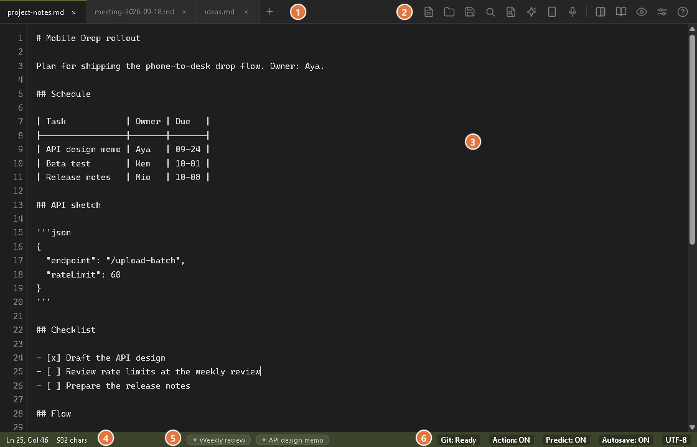
- Tab bar Your open notes. A dot marks unsaved changes, and + opens a new note
- Toolbar On the right: open file, open folder, save, find, search scraps, Ask AI, Mobile Drop, voice input, split / preview, Zen mode, full screen, settings and help
- Editor Line numbers on the left. The text is plain Markdown
- Status bar (left) Caret line and column, and the character count
- Related-note pills Notes from the opened folder that match what you are writing. Click one to open it
- Status bar (right) Git sync, Action, Predict, Autosave and encoding badges
On Windows, the toolbar also has a Quick Capture button, a small input-box icon right after the microphone button. It opens the note popup described in Quick Capture (Windows). On macOS this button does not appear.
Each line number sits on the first row of its line. When a long line wraps onto more rows, the rows under it have no number, so the numbers always match your real lines. They follow zoom, the window width and the second pane of the split view. In a note over 120,000 characters, plain 1, 2, 3 numbering is used instead, so the numbers can drift once lines wrap.
To focus, use Zen mode (Shift + F11; macOS: Ctrl + Cmd + Z). The toolbar, tabs and status bar hide, and only the note stays. The window size does not change. Press Esc or Shift + F11 again to leave.
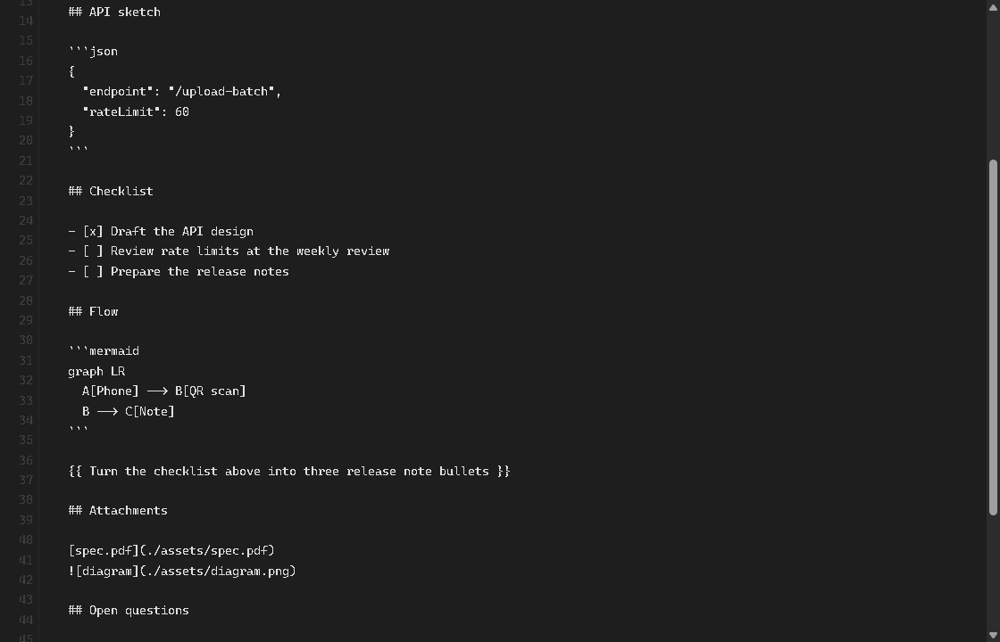
For a window that fills the whole screen, use full screen (F11; macOS: Ctrl + Cmd + F): the title bar and the taskbar go away, and pressing the key again brings the window back. Use both and only the note is left on the screen. Each also has a toolbar icon (the eight-spoked wheel is Zen mode, the four corners are full screen).
Each status bar item is explained in the next section, Reading the Status Bar.
Reading the Status Bar
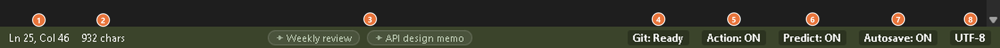
- Caret position Line and column
- Character count Characters in the whole note
- Related-note pills Up to two
- Git sync State of the scraps folder. Click to sync
- Action Quick Actions: On / Manual / Off. Click to switch
- Predict Ghost text on or off. Click to toggle
- Autosave On or off. Click to toggle
- Encoding Click to switch between UTF-8 and Shift_JIS
| Position | Shows |
|---|---|
| Left | Caret line and column, character count, selection length (only while text is selected) |
| Center | Related-note pills, the LLM / processing indicator, messages |
| Right | Running-task badge (click to open the task panel, Alt + T), Git sync (click to sync), IME, Action (click to cycle On → Manual → Off), Predict (ghost text), Autosave, encoding (click to toggle) |
To make related-note pills appear
- Open a folderPress Ctrl + Shift + O and choose your notes folder. MD-Memo remembers it after a restart
- Keep writingStop typing and wait about 1.2 seconds
- Pills appearUp to two notes close to what you are writing are shown
- Click to openThe note opens in a new tab. Point at a pill to see its title, path and first line
If no folder is open, or no note is close enough, no pills appear.
Limits and details (scan range and scoring)
- Opening a folder shows "Loaded workspace: N notes found".
- Only
.md,.markdownand.txtfiles are scanned, up to 3 folder levels deep. - Folders that start with
., plusnode_modules,vendor,appdata,$recycle.bin,system volume informationandwindows, are skipped. - The scan stops at 300 notes, 1500 files or 2.5 seconds, whichever comes first. In a very large folder, later notes may not be considered, and you are not told.
- For each note, MD-Memo keeps the first heading (or the file name) as the title and the first line as the snippet.
- 1.2 seconds after you stop typing, it takes keywords (2 or more characters, up to 8) from the current line and the 250 characters before the caret.
- It scores every other note and shows the top 2 as pills.
| Where the keyword matched | Score |
|---|---|
| Title | 3 |
| Snippet (first line) | 1.5 |
| Path | 1 |
Installation & Launch
Download md-memo-windows-x64.zip from the Releases page, unzip it anywhere and run md-memo.exe. From the release that contains md-memo-cli.exe, the same zip also holds that console build of the command line, for scripts, agents and CI (see Headless CLI Commands).
- Needs the Microsoft Edge WebView2 Runtime (included with Windows 11)
- MD-Memo cannot start without the runtime
brew install --cask youshinh/tap/md-memo- macOS 10.15 or later
- The first launch needs the step in "macOS First Launch" below
Releases are ad-hoc signed and not notarized by Apple, so Gatekeeper blocks MD-Memo.app the first time. The dialog says Apple could not verify that it is free of malware.
macOS 15 (Sequoia) or later: click Done in the dialog (not Move to Trash). Then open System Settings → Privacy & Security, scroll down to Security, click Open Anyway next to the message that MD-Memo was blocked, and enter your login password. The button is shown for about an hour after you try to open the app.
macOS 14 or earlier: right-click (Control-click) the app in Finder and choose Open.
Any version: open Terminal in the folder that holds the app and run xattr -dr com.apple.quarantine "MD-Memo.app" once.
Limits and details (other ways to get it, update check)
- Install from a zip: Download a zip from the Releases page and unpack it into any folder.
- Universal binary: Starting with the next release, the macOS build is a universal binary and supports both Apple Silicon and Intel Macs.
- No Mac to test on? Every push to the repository builds
MD-Memo.appon GitHub's hosted macOS runners. Open the Actions tab (or trigger the CI workflow by hand with Run workflow), open the latest CI run, and downloadmd-memo-macos-<commit-sha>from Artifacts. It is ad-hoc signed the same way, so the same first-launch step applies. - Update check: Shortly after launch, MD-Memo asks GitHub whether a newer release exists (a single request to
api.github.com; no note content is sent). If there is one, a small badge appears on the Help (?) button.
System Tray & Instant Summon (Ctrl+Alt+M)
- The close button (✕) does not quit. MD-Memo stays in the system tray
- Garbage collection trims memory use to only 5–15 MB
- To quit completely, use the tray icon
- Right-click the tray icon for its menu: Open MD-Memo, Quick Capture (with its hotkey shown), Open inbox folder (only while the hot folder is on) and Quit
- There is no menu-bar icon. Closing the window leaves MD-Memo in the Dock (memory is trimmed the same way)
- Click the Dock icon, or press the hotkey, to bring it back
- To quit, press Cmd+Q
Press the hotkey from any app. The window jumps to the front and the cursor returns to where you left it.
Pressing it again does not hide the window. To send MD-Memo back to the background, close the window.
Autonomous IME Shield (IME Guardian)
Typing inline code (`...`), code blocks (```) or URLs with the IME on can leave full-width letters such as ｃａｔ or ｆｉｎｄ, and the command then fails. IME Guardian removes that annoyance.
- Lexical scope protection: Inside code blocks, it steers you to half-width alphanumeric mode automatically (only 11 µs of input delay).
- Romaji auto-repair in direct input: If you type "konnitiha" while in half-width direct input mode, it is converted to hiragana for you.
Daily Scraps Model
MD-Memo creates a daily scrap file (scraps/YYYY-MM-DD.md) for you, for quick journaling and terminal pipe captures.
With Ctrl+Shift+F (described below), you can search years of daily scraps in milliseconds.
How Untitled Notes Are Named
A new note has no file name. Its tab shows a name taken from the text, and the name follows what you type until you save. The name is the first of these that exists:
- The first headingThe first
#heading in the note, at any level. The date heading a new note starts with (# 2026-09-25 07:51) does not count. - Otherwise, the first line with something in itBlank lines, code, comments, tables and similar lines are passed over (see below).
- Otherwise, the dateA note that holds only its date heading is named after it, as
2026-09-25 07-51.
Save As. The file name offered is YYYY-MM-DD_<name>.md, for example 2026-09-25_Weekly plan.md. The date is the one in the note's own date heading, and a note without one gets today's date. The tab keeps the plain name without the date, and you can edit the name in the dialog as usual.
What is skipped, and how the name is cleaned up
- Skipped: blank lines, front matter (the
---block at the very top), fenced code blocks, HTML comments (MD-Memo's own result markers too), table rows and separator lines, horizontal rules, and lines that hold only a slot or task notation ({{ }},[[ ]],[? ],[! !],[>> ],【? 】). Only the first 200 lines are read. - Markdown removed: quote marks, list bullets and numbers, task boxes, bold and italic marks, code backticks and a closing
#. A link keeps its text, an image keeps its alt text, and HTML tags are dropped. - Safe as a file name: the characters Windows does not allow in a file name (
\ / : * ? " < > |) and control characters become spaces instead of disappearing, so words do not run together. Trailing dots and spaces are removed, and a reserved Windows name such asCONorNULgets an underscore in front. - Length: about 40 characters. The name is cut at a space or after a closing bracket, an open bracket is never left dangling (the name stops before it), and an emoji is never split. No
...is added.
02 Capabilities Guide
Which one do I use?
| What you want | Entry point | What it does |
|---|---|---|
| Write Fix or draft the text in front of you |
Ask AI Ctrl + L (macOS: Cmd + L) |
The built-in LLM answers about your selection (or the current line) in seconds, and the answer appears right below it. |
| Run Execute a command |
Command Bar Ctrl + E (macOS: Cmd + E) |
Pipes your selection through a shell command and adds the output below it (a setting can make it replace the selection instead). As fast as the command itself. Press Tab in the bar and the AI writes the command for you. |
| Delegate Hand off a whole investigation or implementation |
Auto selector Ctrl + Enter on a line (macOS: Cmd + Enter) or type {{ instruction }} |
MD-Memo decides whether the line goes to the built-in AI, an agent or a command, and the result lands below it. An external agent CLI (Claude Code, Codex, Hermes, Antigravity, …) works in the background for minutes. See Auto Selector. |
| Not sure what to do | Ctrl + J (macOS: Cmd + J) |
Suggests up to three next steps for what you are writing (Quick Actions). Each card maps to Write, Run, or Delegate. |
Telling the three verbs apart
- Acts on the text right in front of you
- Select it, then press Ctrl + L; the answer appears below
- Returns in a few seconds
- Use it when you want a command's output
- No need to wait for an AI
- Returns almost instantly
- Write a line, or
{{ ... }}, and press Ctrl + Enter - Research or implementation you would rather not do by hand
- Can take a few minutes
- You can keep editing the note while it runs
Write · Ask AI (Ctrl+L)
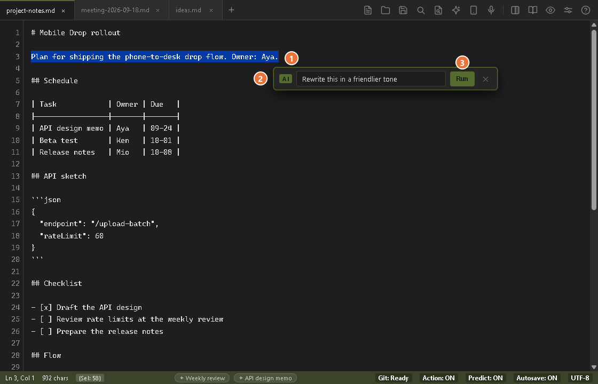
- Selected text The instruction applies to it. With nothing selected, the AI reads the current line, and on a blank line the whole note
- Ask bar Type what to do with the text
- Target chip What the AI will read: Selection (with its length), Current line or Whole note
- Run button Enter also runs it, and Esc closes the bar. The answer is inserted below the text
- Select text, or put the caret on a lineSelect the part you want to translate or summarize. With no selection, the AI reads the current line
- Press Ctrl + L and write an instructionThe ask bar opens right under the caret, with no dialog and no context switch
- Press Enter to runThe answer appears below your text. To cancel it, use the task panel (Alt + T)
Example instructions
- "Explain what causes this error and how to fix it"
- "Translate this into natural Japanese"
- "Summarize this into meeting-note bullets"
Ctrl + Enter opens this bar too. On an ordinary sentence, it asks for an instruction and saves it below the sentence as [[ @llm ... ]], with the answer under it. See Delegate · Auto Selector.
Common instructions live in the command palette (Ctrl + Shift + P). Pick one and the ask bar opens with a ready-made instruction:
- UNIX Pipe: Polish & Refactor: tightens the selection into concise, logical prose.
- UNIX Pipe: Convert to Bullet Points: extracts the key points as structured Markdown bullets.
- UNIX Pipe: Extract Action Items: pulls TODOs out of the text as a
- [ ]checklist.
Limits and details
- What the AI reads: the selection; with no selection, the current line; on a blank line, the whole note. The chip on the bar tells you which one applies. In an empty note it says "No target text (free question)" and only your instruction is sent.
- Where the answer goes: below the last line of that text, with one blank line before and one after. The selection or line itself is never replaced. On a blank line, the answer takes that line.
- If the LLM is not set up: the bar does not open. A message says "LLM is not configured (Settings -> AI Models)" and the note is untouched. That is the case when the model or the URL is empty, or when a cloud service such as Gemini or OpenAI has no API key (local servers such as Ollama need no key).
- While it works: a placeholder such as
[AI Generating: first 20 characters of your instruction...]sits in the note, and the answer replaces it when it arrives. - If it fails: one line,
[LLM error: ...], is left instead (the message is shortened to one line). - Cancel: the task panel (Alt + T) lists the request. Cancel it there and the placeholder disappears, so the note is back as it was. The request itself is not stopped; an answer that arrives later is discarded.
- Japanese input: pressing Enter to confirm an IME conversion does not send the instruction. Press Enter once more to run it.
- Other ways in: the toolbar AI button, the right-click item "Ask AI..." and the palette item "Ask AI" open the same bar. It uses the built-in text LLM (Settings → AI Models).
- Answer fences: if the model wraps its entire answer in a single
```markdown/```mdfence, MD-Memo removes that fence before inserting. A real code answer (```pythonand the like), or an answer that merely contains fenced blocks among other text, is inserted exactly as returned. - Old shortcut: if you had saved Ctrl + K for this bar, MD-Memo moves it to Ctrl + L once and shows a notice; the separate prompt dialog was merged into this bar.
Write · Ghost Text (Predictive Completion)
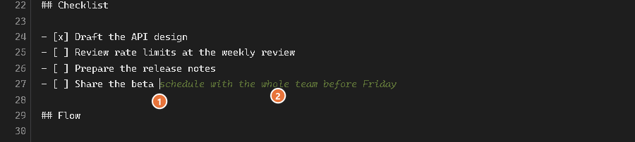
- Caret What you have typed so far
- Ghost text The grey prediction. Press Tab (or →) to accept it, and Ctrl + → to accept one word
Limits and details
- Suggestions come from a local LLM (Ollama / Gemma 4) or a cloud API. The setting is "Inline Autocomplete (Ghost Text)" in Settings → AI Models.
- The default wait before a suggestion appears is 500 ms. The settings screen allows 200–2000 ms, but the effective minimum is 300 ms.
- Click the "Predict" badge in the status bar to switch it on or off.
Write · Proofreading & Typo Correction (Alt+C)
- Select textPick the part you want to polish, such as meeting notes or a report
- Press Alt + CmacOS: Cmd + Shift + C. No prompt is needed
It polishes the text instead of rewriting your meaning, so it suits the final pass on meeting notes and reports. You can turn it on or off with "Enable AI typo & error correction (Alt+C)" in Settings → General.
Write · Paste Image OCR (Ctrl+V)
- Copy an imagePut a screenshot or a diagram on the clipboard
- Press Ctrl + V in MD-MemoGemini Vision OCR starts
- Markdown is pastedThe text, tables and code in the image arrive as structured Markdown
Limits and details (required settings)
- In Settings → AI Models → Image OCR (Vision), set an image model such as Gemini and its API key.
- The switch "Automatically transcribe pasted images (Ctrl+V) using Gemini OCR" must be on (it is on by default).
- It works only when the clipboard holds an image and nothing else. If there is also text, the text is pasted.
- A local vision model (Ollama or LM Studio) can do OCR without an API key.
- To paste the image as an image, without OCR, use paste as it is (Ctrl + Shift + V), which saves it to assets. When the switch is off, or the vision model has no API key, a plain Ctrl + V saves the image to assets and pastes the link the same way (the toast says why).
- Images that arrive another way: Pictures dropped into the hot folder, screen captures and the Send To entry use the same Image OCR (Vision) settings, without you pressing Ctrl + V. To stop those pictures from being sent to the vision model, tick "Keep images on this PC" (Settings → Sync → Hot Folder section, Windows only). That option does not change what Ctrl + V does.
Write · Smart Paste (Ctrl+V / Ctrl+Shift+V)
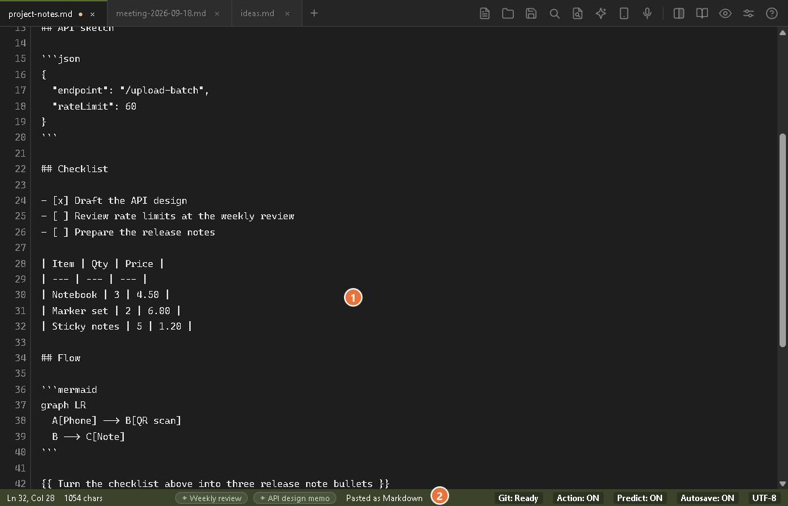
- Pasted table The HTML table was converted to a Markdown table
- Toast The status bar says "Pasted as Markdown"
- HTML with structure: Tables, headings, lists and links from web pages, Word, Google Docs and Excel are converted to Markdown. A toast says "Pasted as Markdown"
- Content without structure (code and logs copied from an editor or a terminal, a single copied cell) is pasted as it is
- Image only: The Image OCR vision model transcribes it to Markdown / Mermaid
- OCR needs "Automatically transcribe pasted images (Ctrl+V) using Gemini OCR" switched on and an API key (Settings → AI Models → Image OCR (Vision)). When either is missing, nothing is sent to OCR: the image is saved to assets and linked, as with Ctrl + Shift + V (the same treatment as Mobile Drop photos)
- Text: Pasted as plain text, with the source formatting stripped. HTML is not converted
- Image only: Saved as
./assets/YYYY-MM-DD-HHmmss.png, andis inserted at the caret. It is not sent for OCR - If the clipboard has both text and an image, as Excel and Word do, the text is pasted and the image is ignored
Limits and details
What is converted (a built-in converter with no external dependency)
- Headings (h1 to h6), paragraphs, line breaks and horizontal rules
- Bold, italic, strikethrough, inline code, and fenced code blocks with a language
- Nested blockquotes, nested lists that keep their
startnumber, and task-list checkboxes - Links (with title) and images
- GFM tables with column alignment (a literal
|inside a cell is escaped) - The wrapper markup that Google Docs adds around copied content
Removed for safety: the contents of <script>, <style>, <iframe> and <svg>, javascript: and data: links, and data: images.
Saved image name: The extension follows the real image type (.png, .jpg, .gif or .webp). A name collision appends -2, -3, and so on.
Where ./assets/ lives: next to the note if it has been saved; otherwise the current workspace folder; and if there is no workspace either, the app data folder. In that last case the inserted link is an absolute file:/// link instead of a relative one.
What is converted: Only HTML that holds a table, heading, list, link, image, quote, rule, or bold / italic text. HTML that is just paragraphs and line breaks, a copy from the VS Code editor, and a single copied Excel cell are pasted as they are.
Getting the old roles back: Switch off "Ctrl+V turns web, Word and Excel content into Markdown" under Settings → General. Then Ctrl + V pastes plain text and Ctrl + Shift + V converts HTML (and, if the paste event itself carries no HTML, falls back to the async clipboard API; the embedded browser may then show its own one-time permission prompt).
Toast: "Pasted as Markdown" for a converted paste, or "Image saved to assets" when an image-only clipboard was saved to ./assets/.
Ctrl + Shift + V is a fixed key and cannot be changed in Settings → Shortcuts. It used to open Preview to the Side; that command is now on Ctrl + Alt + V (macOS: Cmd + Option + V).
Write · Voice Input (Ctrl+Shift+R)
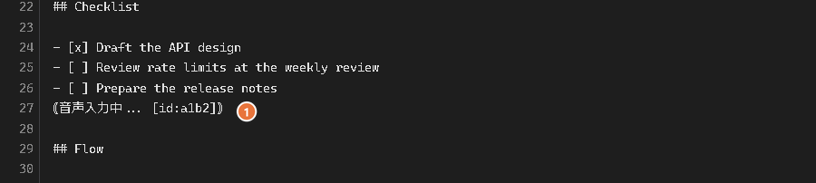
- Recording marker It is replaced by the transcript when recording ends (Esc discards the recording). The marker text is Japanese in both UI languages
- Start recordingCtrl + Shift + R (macOS: Cmd + Shift + R). A
⦅音声入力中... [id:xxxx]⦆marker is inserted at the caret. You can keep typing or click elsewhere while it records - StopClick the Stop button at the bottom left of the window, press Ctrl + Shift + R again, or stay silent for 5 seconds (1–30 seconds in settings) and it stops by itself. Esc discards it: the marker disappears and nothing is sent
- Wait for the resultThe marker changes to
⦅文字起こし中... [id:xxxx]⦆and is replaced by the text when it is done
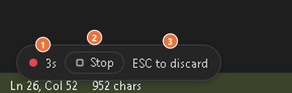
- Recording mark The red dot and the time since recording started
- Stop button Click it to stop recording and start the transcription (the same as pressing the shortcut again)
- ESC to discard Press Esc to throw the recording away
Four ways to start recording
Tidying what you said, and rewriting by voice
After the transcription, a second model (gemini-flash-lite-latest by default) tidies the text before it is inserted. It removes fillers and self-corrections and fits the syntax of the line you are on (bullet, task, numbered list, table). It is on by default.
- Rewrite by voice: select text, then record: what you say is applied to the selection as an edit instruction (for example "more polite"). If it cannot be read as an instruction, the selection stays as it is. The selection can be up to 8000 characters, and the selected text is sent to Gemini.
- Insert as spoken: record with Ctrl + Shift + Alt + R (macOS: Cmd + Shift + Option + R) to skip the tidying for that one recording. A selection is then replaced by exactly what you said.
- Turn it on or off: click "Mic: Refine ON / Raw" in the status bar, or press Ctrl + Alt + R (macOS: Cmd + Option + R). Both keys can be changed in Settings → Shortcuts.
- If it fails: when the second stage fails or is too slow, the transcript is inserted as spoken. If a rewrite fails, the selection is put back.
If transcription fails
The recording is not lost. The audio is kept in the app data folder under voice_cache, and the marker changes to this:
⦅文字起こし失敗: [再試行(id:xxxx)] [音声保存] [破棄]⦆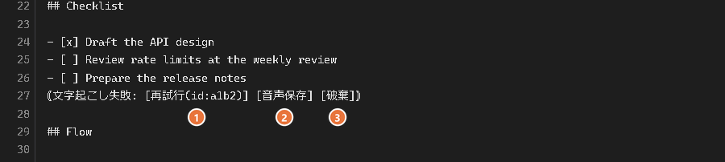
- [再試行] Retry: send the saved audio for transcription again
- [音声保存] Keep audio: move it to the note's
./assets/and insert an[audio](...)link - [破棄] Discard: delete the saved audio and remove the marker
This recovery also works after you restart the app (the saved audio and the marker's id survive a restart).
When the reason is 話し声が検出されませんでした (no speech was detected), the API works and the recording simply holds almost no speech: check the microphone choice and level (Windows Settings -> System -> Sound).
When no answer comes back at all, the marker turns into the [再試行] form once the wait (30 s by default, plus 20 s) is over, and an old “transcribing” marker left by an answer that was lost while the app was closed is cleaned up when you click in the note.
A note on the speech engine: Live voice input on this page, and Mobile Drop, always use Gemini. The on-device Whisper engine (Settings → AI Models → "Speech engine (hot folder & Discord)") applies only to the hot folder and the Discord Bridge.
Settings (Settings → AI Models, "Voice input" group, right below the Image OCR (Vision) settings)
| Setting | Default | Description |
|---|---|---|
| Voice model | gemini-3.5-transcribe |
Suggestions: gemini-3.5-transcribe, gemini-flash-lite-latest. |
| API style | Auto | Auto / Interactions API / generateContent. Auto uses the Interactions API when the model name contains "transcribe", and generateContent otherwise. |
| Language codes | Empty | Comma-separated BCP-47 codes (for example ja-JP, en-US). Empty means auto-detect, which also handles mixed languages. |
| Mode | Smart | Smart removes fillers and formats the text for reading. Verbatim transcribes word for word. |
| Custom vocabulary | Empty | One term per line (names, jargon). Up to 1000 terms, but about 100 works best. |
| Silence timeout (s) | 5 | 1–30. Recording stops by itself after this many seconds of silence. |
| Transcription prompt | Built-in instruction | Used only by generateContent-style models. |
| Tidy the transcript with a second model | On | When off, the transcript is inserted as spoken (and rewriting by voice is unavailable). |
| Refine model | gemini-flash-lite-latest |
Gemini models only. The custom vocabulary is also used as a spelling hint when tidying. |
| Refine timeout (s) | 5 | 1–30. If the second stage takes longer, the transcript is inserted as spoken. |
| API key / Base URL | Empty | Empty means the Image OCR (Vision) settings are used. There is no separate input field for them. |
Messages and errors
Each message is shown in the status bar for 6 to 9 seconds.
| Message | Meaning and what to do |
|---|---|
| Preparing the microphone... | Shown right after you press the key. |
| Waiting for microphone permission. ... | Shown when there is no answer after 5 seconds. The first time, WebView2 shows its own permission prompt: choose Allow. MD-Memo never grants microphone access silently. |
| Microphone access is blocked. ... | In Windows Settings → Privacy & security → Microphone, let desktop apps access your microphone. |
| No microphone was found | No microphone is connected. |
| The microphone cannot be opened. ... | Another app may be using the microphone. |
| Could not use the microphone | A general message for anything not covered above. |
| Voice input works in the editor view | Shown when you press the key in the rendered preview view. Go back to the editor view. |
Limits and details (model, privacy, requirements)
- Model: The default is
gemini-3.5-transcribe. Live voice input uses Gemini models only. The offline engine (on-device Whisper) covers the hot folder and the Discord Bridge only, not this feature. - How it is called: Google's Gemini 3.5 Transcribe is called through the Interactions API (
POST {base}/v1beta/interactions, headerx-goog-api-key). Other Gemini models, such asgemini-flash-lite-latest, run through generateContent with a prompt. - The live model cannot be used:
gemini-3.5-transcribe-liveis the streaming (Live API) variant and cannot be used for recorded audio. Choosing it shows an error that says so. - Privacy: MD-Memo always sends
store: false, so Google does not keep the recording or the transcript. - Keys: If the API key and Base URL are empty, the Image OCR (Vision) settings are used. The config file also has
voice.apiKey/voice.baseUrlkeys, but the settings screen has no field for them. - Japanese IME: The shortcut works even while the IME is on.
- Microphone permission: The permission prompt comes from the embedded browser (WebView2), not from the OS, and only the first time you record.
- macOS: A microphone usage description is built in, but behavior on macOS has not been fully verified yet.
Run · Command Bar (Ctrl+E)
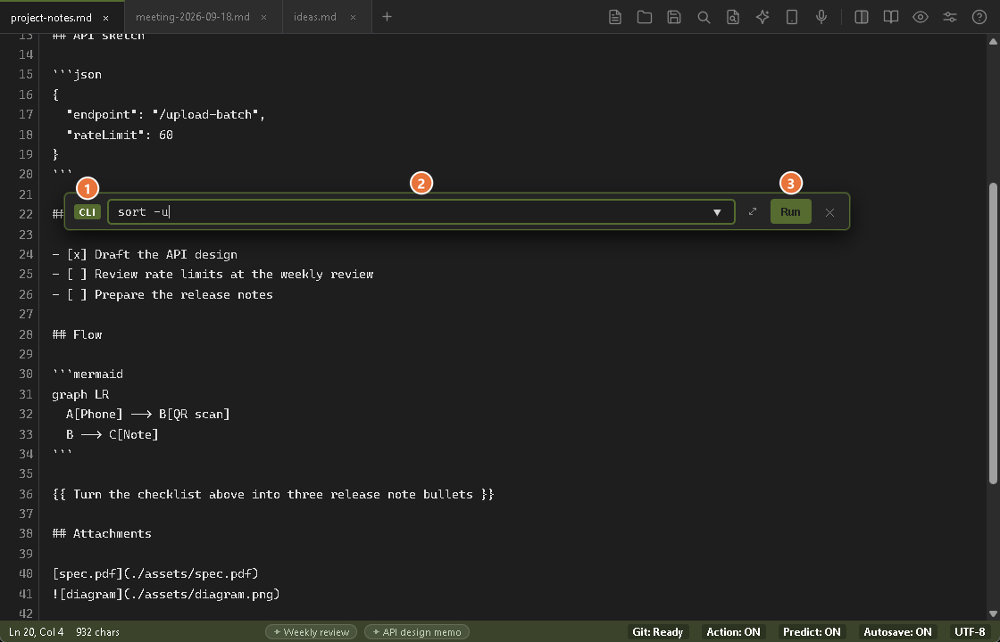
- Mode badge It says "CLI". Click it, or press Tab, to switch to AI mode. The mode you pick is remembered
- Command field Type a shell command, or pick one from the drop-down list: your recent commands and ready-made ones such as
sort -u,jq .andgit status - Run (Enter) Sends the selection (or the whole note if nothing is selected) to the command, and its output comes back
- Select textIf you select nothing, the whole note is used
- Press Ctrl + E to open the barIt opens in the mode you used last (CLI mode the first time). If the badge says "AI CLI", press Tab
- Type a command and press EnterThe command's output goes right below the selected text, which stays. Esc closes the bar
Ctrl + E opens one command bar in the mode you used last. Press Tab, or click the badge at the left edge of the bar (CLI / AI CLI), to switch modes at any time. Rule of thumb: if you can write the command yourself, use CLI mode; if you can't, use AI mode.
The two keys that open one specific mode, "Command Bar: CLI mode" and "Command Bar: AI mode", have no default key. You can assign them in Settings → Shortcuts (group "Command Bar").
Example commands (type them yourself)
jq .: pretty-print and indent JSONsort -u: drop duplicate lines and sort alphabeticallytr a-z A-Z: convert to uppercaseduckdb -box: run SQL inline and print a table
Limits and details
- What happens to the result: It is set by "Where the command's output goes" and "Open CLI execution results in a new tab" under Settings → Agent, in the "Commands (Run)" section. With text selected, the output goes below the selection's last line by default and the selected text stays. If the command gives back the very same text (for example, sort on lines that are already in order), nothing is added, so no second copy appears, and a message says so. Choose "Over the selected text (like a filter)" and the selection is replaced by the output, as before. When "Open CLI execution results in a new tab" is on (the default), the result also opens in a new tab. When it is off, no new tab opens, and with no selection the output is added at the end of the note (with "Over the selected text", the whole note is replaced by the output).
- Empty output: If a command succeeds but prints nothing, the result tab shows "(no output)".
- Working directory: Commands run in MD-Memo's own working directory.
- The drop-down list: Your recent commands come first, then your own
commandsnippets from agents.yaml, then the fixed filters (sort,sort -u,jq .,tr,wc -l,duckdb -boxand more), then the built-in command snippets for your OS: Current date and time, Git status, Git diff summary, Git recent commits, List large files and List files. A snippet whose body has a placeholder such as${selection}or$0is left out. The same snippets can be inserted as[[ $ ... ]]tasks (see Auto Selector).
Run · Command Bar: AI Mode (Ctrl+E, then Tab)
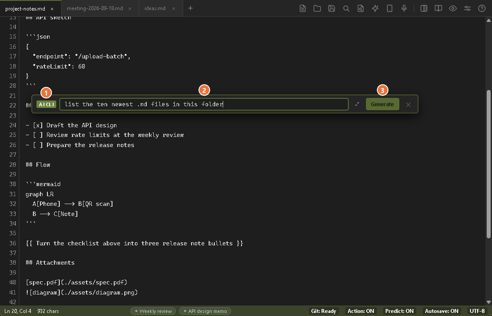
- Mode badge It says "AI CLI". Click it, or press Tab, to go back to plain CLI mode
- Request field Instead of writing a command, describe what you want in plain words
- Generate (Enter) The AI writes the command into the field so you can check it. Press Enter again to run it
- Press Ctrl + E, then TabThe badge at the left edge must say
AI CLI(if it already does, skip Tab). The bar opens in this mode next time - Describe what you want to doFor example: "find files modified in the last 24 hours" or "kill whatever is using port 8080"
- Press Enter to generateThe AI writes the matching shell command and puts it in the bar
- Read it, then press Enter to runAlways read the command before you run it
Every generated command goes through a safety check before it runs. Commands that could destroy your system are refused, and risky ones show a warning.
Delegate · Auto Selector (Ctrl+Enter)
Four keys, four jobs (on macOS, read Ctrl as Cmd)
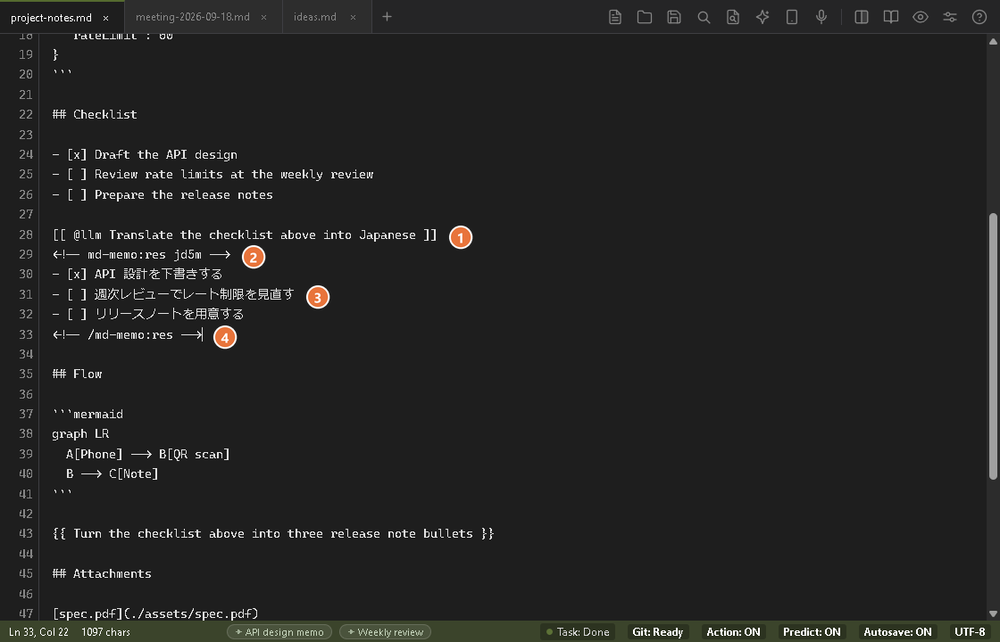
[[ @llm ... ]] and the answer arrived below it- Your instruction The line was rewritten as
[[ @llm ... ]]and stays in the note - Opening comment line Marks where the result starts (
md-memo:resand a short id) - The answer It sits between the two comment lines
- Closing comment line Marks where the result ends
How to use it
- Write one lineA request such as "Translate the checklist above into Japanese", or a command such as
git status - Press Ctrl + EnterWith the caret on that line. macOS: Cmd + Enter
- Let it workAn AI request runs at once. For an agent or a command, the line is rewritten and waits: press Ctrl + Enter again to run it, or Ctrl + Z to undo the rewrite
- Read the result below the lineIt sits in a block between two comment lines. Press Ctrl + Enter on the instruction line again to run it again; the block is replaced
An agent or a command waits for a second press. The line is rewritten, and a message tells you how to go on. An agent task is written for your default agent (Settings → Agent), or for the agent you name with @.
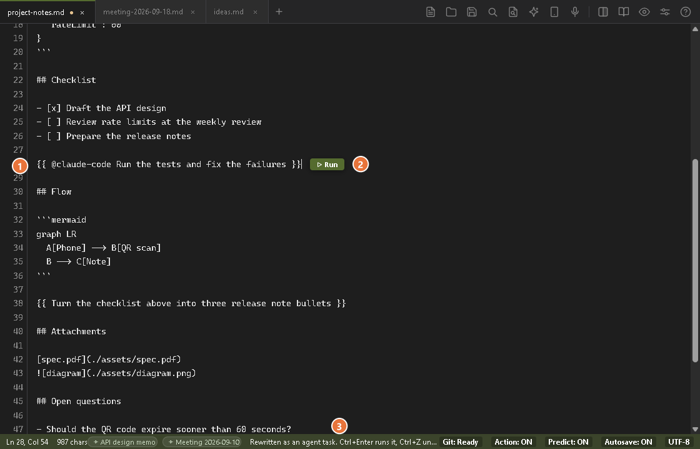
{{ @claude-code ... }} and stopped- Rewritten line The request became an agent task. It has not run yet
- Run button The same as pressing Ctrl + Enter again
- Message Says how to go on: Ctrl + Enter again to run it, Ctrl + Z to undo the rewrite
Both behaviors have a switch in Settings → Agent, in the "Auto selector (Ctrl+Enter)" group. See Agent & CLI Tab.
An ordinary sentence opens the ask bar. When the line is not clearly a request, MD-Memo asks what to do with it. What you type is saved below the line as [[ @llm ... ]] and runs.
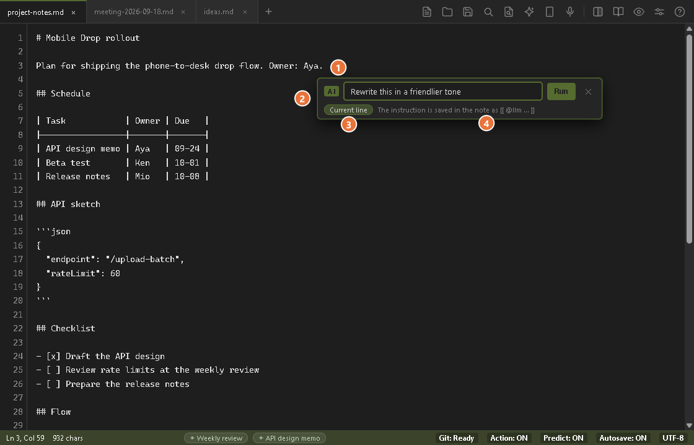
- The line An ordinary sentence, not a request. The bar is about this line
- Ask bar Write what the AI should do with the line
- Target chip What the AI will read: the current line, or your selection
- Hint The instruction is saved in the note as
[[ @llm ... ]]
Two ways a result comes back
{{ ... }}- The result replaces the slot
- Every hand-written
{{ ... }},[? ],【? 】,[! !],[>> ]and{{ @skill ... }} - Undo it with Esc or Ctrl + Z (see Delegate · Agents)
[[ @llm ... ]],[[ $ ... ]]and{{ @agent ... }}- Your instruction stays, and the result goes below it
- Run it again and the old result is replaced
Notations and the result block
| You write | It goes to | The result |
|---|---|---|
[[ @llm instruction ]] | The built-in text LLM (Settings → AI Models) | Below the line |
[[ $ command ]] | A shell command, with no input. It passes the same safety check as the command bar | Below the line, in a code block |
{{ @agent instruction }} | An agent from agents.yaml. agent is its key or an alias, not case-sensitive | Below the line |
A classic {{ ... }} | As before: the profiles and {{ @skill ... }} | Replaces the slot |
- What counts as a notation: A
[[ ... ]]is a task only when it starts with@llmor$, so wiki links such as[[Note name]]are left alone. A{{ @name ... }}is an agent task whennameis an agent's key or alias. Otherwise it is a skill, as before. - One line per task: The whole notation must fit on one line. It may follow a list or quote mark, as in
- [[ @llm ... ]]or> {{ @claude ... }}, and a rewrite keeps that mark. Notations inside code blocks or inline code are ignored. - Agent tasks: The instruction reaches the agent as you wrote it. The standing instruction of the
{{ }}notation (code blocks only) is not added. If nothing follows the name and that agent takes an instruction, the task ends with an error line (its text is Japanese in both UI languages).
What the result looks like
[[ @llm Translate this into English ]]
<!-- md-memo:res a1b2 -->
The translated text
<!-- /md-memo:res -->- Result block: Two HTML comment lines with the answer between them. The short id (
a1b2, usually 4 characters) is unique in the note. A run never changes your instruction line. The answer is trimmed, and no blank line is added inside. Nothing inside a result block is ever run, even if the answer contains a{{ }}. - While it runs: A one-line marker,
<!-- md-memo:run a1b2 -->, sits under the line, and the status bar shows the running-task badge. - Where you see the comment lines: The editor shows them, and MD-Memo's own preview hides them (a viewer that passes HTML through does not display them either). You may delete them by hand. If you delete the marker while a task runs, the answer is added at the end of the note.
- Run again: Press Ctrl + Enter on the instruction line. The old result block (or a marker left behind by a crash) is replaced, so results do not pile up. While a task is running you get "This slot is already running."
- Cancel: Press Cancel on the task in the task panel (Alt + T), which also lists AI and command tasks. The marker disappears and the note is as it was. An AI request cannot be stopped at the provider, so MD-Memo forgets it and drops a late answer. A command or an agent is stopped. If you cancel a re-run, the old result does not come back.
- If it fails: The block holds one line,
[LLM error: ...]or[agent name error: ...]. A command's block holds its output, its error output and anexit code Nline. - What the AI receives: Only your instruction. A task recorded through the ask bar sends the instruction and the text it was about. Its opening comment then reads
ctx=above n=1(n is the number of lines of that text), for example<!-- md-memo:res a1b2 ctx=above n=1 -->. On a re-run the same text is sent again: up to n non-blank lines directly above the instruction (looking past other task lines and result blocks; at most 80 lines or 8000 characters). A task you wrote by hand, made from a snippet or made by rewriting a line carries no such mark, so only what is inside its brackets is sent.
Finding and handling results
- The green bar: A result block shows as a thin green bar in the gutter beside the line numbers: bright green on the opening comment line, light green on the lines of the answer, dark green on the closing comment line. A block that was never closed (a run that did not finish) gets only the bright bar, on its opening line. A note without a result block shows nothing, and the text itself is never painted.
- Commands: Open the command palette (Ctrl + Shift + P) and type "Result": Go to Next Result Block and Go to Previous Result Block (they wrap around the ends of the note), Copy This Result (the answer without its two comment lines), Delete This Result (the whole block, comment lines included) and Confirm This Result. Copy, Delete and Confirm act on the block that holds the caret; its two comment lines count as inside it. Delete and Confirm are one undo step. None of them has a key by default: you can give each one in Settings → Shortcuts, group "Result Blocks". While the preview covers the editor they only show a message.
- Confirm: The answer stays in the note as ordinary text and its two comment lines go. A task notation inside it (
[[ @llm ... ]]or{{ @agent ... }}) is live again, because it is no longer inside a result block: Ctrl + Enter on it runs it.
How it decides, and when something is not set up
The check runs on your PC with fixed rules. It uses no network and calls no model. Each time you press the key, it reads one line, or your selection.
What Ctrl + Enter does, in this order
- While a Japanese IME is converting text, the key is left alone. A held-down key runs only once.
- The caret is inside a result block: nothing runs. The status bar shows "This is a result block. Write your instruction outside of it."
- A task in the new notations is under the caret (with a selection: under the start of the selection, else the first one inside it): only that task runs. Several lines never run at once.
- The caret is inside a classic
{{ }}slot: it runs, and its result replaces it, as before. - The Auto selector is off, the line is blank, or the line holds a slot that the caret is not inside: the older rule applies. The next slot after the caret runs, and if there is none, the first slot in the note (with no slot at all, the status bar says so). Inside a fenced code block nothing happens.
- Otherwise the target is your selection, or the current line. If the selection covers only part of a line or several lines, or the line is not clearly a request, the ask bar opens.
- If the whole line looks like a request, MD-Memo decides where it goes:
| The line is judged to be | What happens |
|---|---|
| An instruction for the AI | If the LLM is set up, the line becomes [[ @llm ... ]] and runs at once. |
| A job for an agent | The line becomes {{ @agent ... }} and waits. Press Ctrl + Enter again to run it. |
| A command | The line becomes [[ $ ... ]] and waits. Press Ctrl + Enter again; the safety check runs first. |
With "Confirm before an auto-detected agent or command runs" switched off, an agent or a command runs right after the rewrite. An AI instruction always runs at once.
What counts as an instruction
- A request: a request phrase (Japanese endings such as ...してください, or English such as "please" and "can you"), a question with a question word or a question mark, or an English command word such as translate, summarize, fix, write or explain.
- Not a request (the ask bar opens): ordinary statements, headings, URLs, code, table rows, and a line longer than 240 characters.
- Where it goes: the AI for wording jobs (translate, summarize, proofread, rephrase, bullet points, tables, ideas, explanations). An agent for code and project jobs (implement, refactor, run the tests, commit, pull request, build, research, fix a bug, read an error log). A command for a line that starts with a known command such as
git status, or a pipe such asgit log | head. If nothing fits, the AI (a text-only answer is the safe side). - You can say it yourself: a line that starts with
@llm,@agent(a key or an alias) or$goes where you said. - Risky commands are never guessed: a line such as
rm -rf build(delete, move, copy, sudo and the like) opens the ask bar. To run one, write[[ $ ... ]]yourself; the safety check then decides.
It can be wrong. The rules are fixed, so a polite request to a person, such as "Please share the materials in advance.", also looks like a request to the AI. When the check is not sure, it opens the ask bar and leaves your note alone until you send an instruction. A wrong guess for an agent or a command is easy to undo, because the line is rewritten first and waits (Ctrl + Z).
When something is not set up
| Situation | What happens |
|---|---|
| The LLM is not set up (the model or the URL is empty, or a cloud service such as Gemini has no API key) | The status bar shows "LLM is not configured (Settings -> AI Models)". Your note is not touched: no rewrite and no marker. Local servers such as Ollama need no key. |
| The agent is not found (agents.yaml or PATH) | The line is rewritten anyway, and a second message warns that the agent was not found. Running it ends with an error line in the result block. |
| The command is dangerous | The same safety check as the command bar refuses it ("Security Block: reason"). A warning-level command asks you to confirm. If it is refused or you cancel, nothing runs and no result is written. |
| A command is slow | It is stopped after 30 seconds. If no answer arrives within 40 seconds, the task fails with "No answer from the command (timed out)". |
| The note changed before the answer could be written | The status bar shows "The note changed in the meantime. Press the key again." If you close the note while a task runs, the answer is dropped. |
Ready-made tasks (snippets)
Insert a ready-made task instead of typing one. The picture shows the command palette route. Typing {{ lists the same snippets after the notations, and a short word such as ;sum plus Tab inserts one at once.
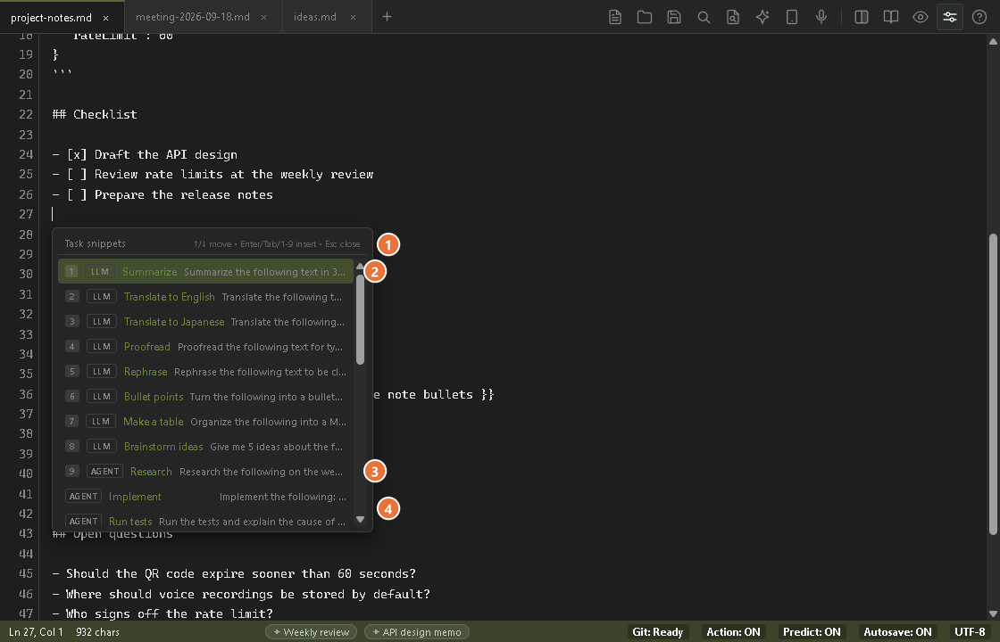
- Header The keys: Up and Down move, Enter, Tab or 1-9 insert, Esc closes
- A snippet Its number key, a kind tag, its name and a one-line preview. The first nine can be inserted with the keys 1-9
- Kind tags LLM (the built-in AI, the answer lands below), AGENT (an agent), CMD (a command) and TEXT (plain text)
- The list scrolls The command and text snippets follow, then your own snippets from agents.yaml
Snippets, your own snippets and aliases
Three ways in
- Type
{{: The quick selector (the popup under the caret) lists the notations first, then the snippets, with a kind tag, a name and a one-line preview. The first nine rows have a number key. Enter, Tab or a number inserts one in place of the{{, and Esc closes it. Typing[[opens nothing, so wiki links are not disturbed. The header of this popup is Japanese in every UI language. - Command palette: Choose "Insert task snippet". It lists only the snippets, at the caret.
- A short word and Tab: At the start of a line or after a space, type an exact short word such as
;sumand press Tab. Any other Tab works as before. Nothing is expanded inside code.
Inserting never runs anything. The caret lands where your text goes; press Ctrl + Enter to run the task.
Built-in snippets
| Kind | Short word and name |
|---|---|
| LLM becomes [[ @llm ... ]] | ;sum Summarize, ;en Translate to English, ;ja Translate to Japanese, ;proof Proofread, ;rephrase Rephrase, ;bullets Bullet points, ;table Make a table, ;ideas Brainstorm ideas |
| AGENT becomes {{ @agent ... }} | ;research Research, ;impl Implement, ;test Run tests, ;review Review, ;refactor Refactor |
| CMD becomes [[ $ ... ]] | ;date Current date and time, ;gst Git status, ;gdiff Git diff summary, ;glog Git recent commits, ;grep Search for a word, ;rg Search for a word (ripgrep), ;wc Count lines (file), ;uniq Unique sorted lines (file), ;jq Pretty-print JSON (jq), ;big List large files, ;ls List files |
| TEXT inserted as it is | ;llm LLM task (blank), ;agent Agent task (blank), ;cmd Command task (blank) |
- One version per OS: A command that differs between systems is listed only in the version for yours: PowerShell on Windows, sh on macOS and Linux.
- Placeholders:
${selection}(the selected text),${line}(the current line),${date}(today, YYYY-MM-DD),${agent}(your default agent) and$0(where the caret lands). Write$$0or$${for a literal$0or${. - The selection:
${selection}is filled when you insert from the command palette with text selected. Otherwise it is empty. - Safe by design: A substituted value becomes one line and cannot break a
[[ ]]or{{ }}. In a command, quotes,$,;,|and other shell characters are removed from it.${selection}and${line}are cut at 2000 characters in a task and 300 in a command.
Your own snippets and aliases (in agents.yaml, see Customizing it in agents.yaml)
agents:
my-agent:
command: "my-cli"
args: ["--prompt", "{instruction}"]
aliases: ["mine", "m"] # {{ @mine ... }} and {{ @m ... }} call my-agent
snippets:
- id: "weekly"
label: "Weekly review"
kind: "llm"
trigger: "/weekly"
body: "Summarize this as a weekly review in 3 points: ${selection}"- Aliases:
aliasesgives an agent extra names for{{ @name ... }}. Names are not case-sensitive, and a key wins over another agent's alias. Built in:claudeandccfor claude-code, andantigravityandgeminifor agy (hermes and codex have none). If your file defines claude-code or agy without analiasesline, these defaults still work, unless another agent already uses the name. A list you write is used as it is. - Snippet fields:
id,label,kind(llm,agent,commandortext) andbody. Optional:trigger,os(win,unixorany; for commands) andagent(the agent for akind: agentsnippet; the default agent if left out). - Replace or add: A snippet with the
idof a built-in one replaces it, and a newidadds one. A snippet with an unknownkindor an emptybodyis ignored. - Trigger: No spaces, 2 to 30 characters. Capitals become lower case and full-width letters become half-width, and the word must match exactly. Built-in words start with
;, and/weeklyworks as well. - When it applies: The
{{list, the palette list and short-word expansion read aliases and snippets when MD-Memo starts, so restart it after you edit them. Running{{ @alias ... }}and the command bar's drop-down list use the new file without a restart (the agent is looked up when the task runs, and the bar reads the file each time it opens). - Command bar: Command snippets that need no placeholder, in the version for your OS, are also offered in the drop-down list of the command bar.
Delegate · Hand work to an agent ({{ }})
{{ instruction }} in a note and press Ctrl + Enter. An external agent CLI works in the background, and the whole {{ }} is replaced by the result. Name an agent, as in {{ @claude instruction }}, and the result goes below your line instead. Agent CLI needed separatelyThis notation is called a slot. To let MD-Memo choose the AI, an agent or a command for a plain line, see Delegate · Auto Selector.
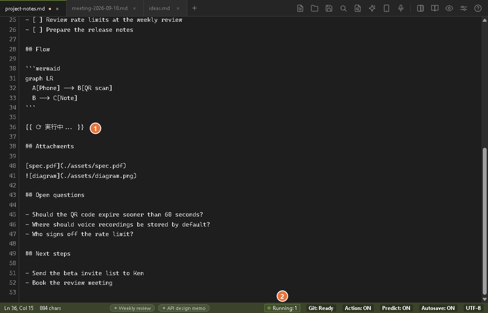
{{ }} becomes a "running" placeholder and the status bar shows a task badge- Running placeholder It stands in for the slot while the agent works, and the result replaces it (its text is Japanese in both UI languages)
- Task badge The number of running agent tasks. Click it, or press Alt + T, to open the task panel
- Answers in seconds
- The answer goes in below your text
- Spends minutes on web research or file work
- You can keep editing the note the whole time
{{ }} and nothing else
The other notations below are all variations on it. When in doubt, write plain language inside {{ }} and it will work.
How to run one
- Type
{{A quick selector opens just below the caret and lists the notations you can use, then ready-made task snippets - Choose a notationMove with ↑ ↓ and confirm with Tab or Enter. 1–9 picks an entry at once. Esc closes it
- Write the instruction
{{ code:…}}is inserted, and the caret lands where the instruction goes - Press Ctrl + Enter to runmacOS: Cmd + Enter. You can also click the small Run button (it carries a play icon)
{{ code: write a Go function that loads this project's config file }}
[? What is Go's release cadence in 2025, and what is the current stable version? ]Limits and details (the run key and input correction)
- Which one runs: A slot or task under the caret runs. On a plain line, the Auto selector takes over (it is on by default). When the Auto selector is off, or the line is blank, Ctrl + Enter uses the older rule: it runs the next slot after the caret, and if there is none, the first slot in the note. Inside a code block it does nothing.
- When none is found: The status bar shows "No slot found to run (place the cursor inside a {{ }}-style block)." for a few seconds. This appears only when the older rule applies and the note has no slot at all. Your note is not changed.
- If it is already running: The status bar shows "This slot is already running."
- Run button: A small button with a play icon. It appears next to a complete block that is not running yet, while the caret is inside it (hover text: "Run this slot (Ctrl+Enter)"; on macOS, Cmd+Enter). It also appears at the right end of a task line (
[[ @llm ... ]],[[ $ ... ]],{{ @agent ... }}) that is not running. Clicking it does the same as pressing Ctrl + Enter. - Quick selector: It also disappears on its own as soon as you keep typing normal words.
- Japanese input: If a Japanese IME turns your brackets into full-width characters (
｛｛,【？), they are converted back to half-width automatically. - No accidental runs: Delimiters inside fenced code blocks, inline code, Markdown links and bare URLs are never treated as slots, so a
{{ }}in a code sample does not fire.
The default notations
| Notation | Profile | Default agent | What it is for |
|---|---|---|---|
{{ ... }} |
code | claude-code | Code generation. Returns a runnable code block with no preamble. |
[? ... ] |
research | claude-code | Research. Searches the web and answers concisely with figures and primary-source URLs. |
【? ... 】 |
writing | hermes | Writing. Stays fully local — no outbound calls — and reshapes the text into clear bullets. |
[! ... !] |
adversarial | claude-code | Adversarial review. Names three risks, vulnerabilities, or bottlenecks instead of agreeing with you. |
[>> ... ] |
deep-research-and-code (recipe) | default agent | Multi-step run: research → risk critique → implementation, in order. |
- Each notation carries its own agent and its own standing instruction (system instruction), so the same sentence comes back in a different shape depending on which one you use.
- Any slot can start with a role name (for example
{{ research: something to look up }}). This name becomes the label for that task in the task panel. - If your project has
skills/<name>/SKILL.md, writing{{ @skill-name: instruction }}passes that file's contents to the agent as extra instructions. If it cannot be found, the slot is replaced by an error. A name that is an agent's key or alias is an agent call instead (next item). - Naming an agent:
{{ @claude-code instruction }}hands the instruction to that agent directly. The name is a key underagentsin agents.yaml, or one of itsaliases(not case-sensitive). By defaultclaudeandccmean claude-code, andantigravityandgeminimean agy. Unlike the notations above, your line stays and the result goes below it, and the notation's standing instruction (code blocks only) is not applied. Details: Auto Selector.
While it runs, and the task panel (Alt+T)
The moment a slot starts, it turns into {{ ⟳ 実行中... }} in place. A task in the new notations keeps its line and gets a one-line marker below it instead. The agent runs in the background, so you can edit elsewhere in the note, or start several slots at once.
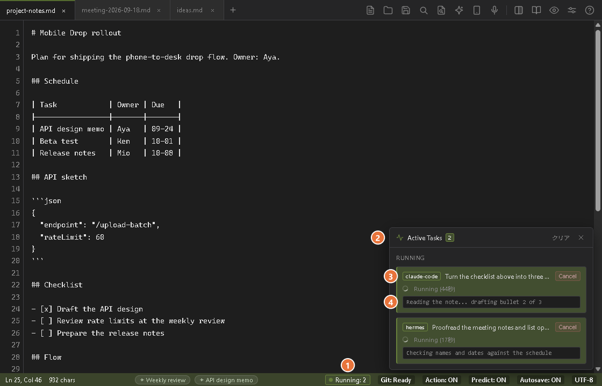
- Task badge In the status bar. Click it, or press Alt + T, to open the panel
- Panel title The number of active tasks. The clear button empties the history
- A running task Agent name, instruction, elapsed time and a Cancel button
- Live output The agent's latest output (Hover Peek), updated while it runs
- Task panel: Press Alt + T (macOS: Option + T), or click the running-task indicator in the status bar. It lists the running tasks and a short history, including AI requests (Ask AI and the Auto selector) and commands.
- Progress (Hover Peek): Each task card shows the agent's latest output line, refreshed every second, so you can tell whether it is stuck or moving.
- Cancel: The card's Cancel button ends the process, and the slot goes back to your original instruction. For a task in the new notations, the marker line under it disappears.
- Timeout: 180 seconds by default. After that the slot is replaced by a timeout message. You can set 10–600 seconds under Settings → Agent, in the "Agents (Delegate)" section. But if an
agents.yamlalready exists (even one created by "Open agents.yaml"), the file's value wins.
Results are merged only after you have stopped typing for about half a second, so an agent finishing mid-sentence never moves your caret out from under you.
Getting the result, and undoing it
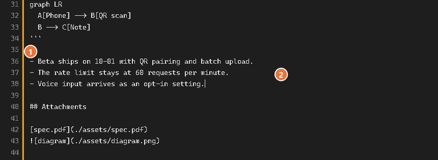
- Amber line on the left edge It shows that an agent result just changed the note. It disappears after the time you set
- Inserted text The agent's result, in place of the slot. Press Esc within the highlight time to restore the original slot
- Ghost Diff (the left-edge line): Right after a result is inserted, a 3 px amber line appears on the left edge of the editor. It spans the full height of the editor, so it does not mark only the changed lines.
- How long it shows: Set it with "Change highlight duration (ms) (Ghost Diff)" under Settings → Agent (default 4000 ms, 1000–10000). The line disappears when the time is up.
- Undo: During that time (the set time plus 1 second), press Esc and that slot alone reverts to your original instruction. Ctrl + Z undoes the last slot run the same way.
- Inline slots stay inline: If the slot had other text on its line, line breaks are removed from the result so it stays on one line.
- Results written below a line: Ghost Diff and the Esc revert belong to slots that are replaced by their result. A result written below a task line has no amber line.
Approval gates in recipes
A recipe such as [>> ... ] runs several steps in order. To put a human check before a risky step, set requires_approval_step on the recipe. The run pauses after that step, and a line like this is inserted into the note (the inserted text is Japanese in both UI languages):
- [ ] 次のステップ（実装コードを生成する）を実行する // approve- Review what you have so farChange
[ ]to[x] - Press Ctrl + EnterThe run continues. If you leave the box unchecked, it stays stopped there
Agent CLIs are installed separately
MD-Memo does not bundle any agent. Install the commands you intend to use — claude, codex, ollama, agy — and make sure they are on your PATH.
Before an agent runs, MD-Memo looks at its definition in agents.yaml. If it carries a flag that skips the agent's own permission prompts (--dangerously-skip-permissions, --allow-dangerously-skip-permissions, --dangerously-bypass-approvals-and-sandbox, --yolo, --full-auto, --auto-approve), or it is a shell that would run your instruction as a command (see append_instruction below), a dialog names the agent, the flag, what it does and the command line. Run starts the agent, and MD-Memo does not ask again for that agent until its command line changes. Cancel (it has the focus; Esc does the same) runs nothing and leaves the note exactly as it was.
This covers every way an agent starts: {{ }} slots, {{ @agent }} tasks, recipes and the Auto Selector. Settings → Agent also warns when the selected agent is set up this way. The check is a list of known flags, not a sandbox: an agent can still do whatever its CLI allows. None of the built-in agents carries such a flag.
Limits and details (error display, working directory and .env)
When a command cannot be found, the slot is replaced by an error like the one below (the inserted text is Japanese in both UI languages). Fix the cause, put the caret back in that slot and press Ctrl + Enter to run it again.
{{ ⚠ エラー: エージェント起動失敗: ... (再試行: Ctrl+Enter) }}- Working directory: The project root, found by walking up from the note until a folder that contains
.md-memo/,agents.yaml(oragents.yml/agents.json),AGENTS.md,skills/or.git/. If none is found, it is the note's own folder. - .env: If the project root has a
.envfile, its variables are passed to the agent as environment variables (only that file is read). - Tasks with a result below: The error is one line inside the result block, such as
[claude-code error: ...]. Fix the cause and press Ctrl + Enter on the task line to run it again.
Customizing it in agents.yaml
Every notation, agent, alias, recipe and snippet can be changed or added in agents.yaml.
- Click "Open agents.yaml"It is in Settings → Agent, in the "Agents (Delegate)" section. If the file does not exist, a commented template is created and opened
- Edit notations, agents, aliases, recipes and snippetsSave the file as UTF-8 without a BOM
- It takes effect on the next slot runIf the file has a syntax error, MD-Memo silently falls back to the defaults. If you changed notations (
slot_profiles/recipes), aliases or snippets, restart MD-Memo so the{{list, the palette list and short-word expansion see them (running a{{ @alias }}task and the command bar list already use the new file)
The first file found, from the top, is used (.yaml, .yml, .md and .json are all accepted):
<scraps folder>/.md-memo/agents.yaml(per-project settings)%APPDATA%\md-memo\agents.yaml(macOS:~/Library/Application Support/md-memo/agents.yaml)
The built-in agents changed after v1.8.0, and your agents.yaml is not rewritten
The built-in definitions (and the template that "Open agents.yaml" writes) are now:
- claude-code:
claude -p "対象ノート: {file}\n指示: {instruction}". Before:--file {file} --prompt {instruction}; Claude Code has no--promptoption and its--fileexpectsfile_id:path, so the instruction did not reach it. - codex:
codex exec {instruction}. Before:--execute --file {file}, options Codex CLI does not have. - agy:
agy -p "対象ノート: {file}\n指示: {instruction}", without--dangerously-skip-permissions. agy may now stop when it needs a permission that print mode cannot ask for. If you want the old behaviour, add the flag back toargsin agents.yaml; MD-Memo then asks you once before it runs.
These command lines were not run on the maintainer's machine: codex exec and agy -p are what those CLIs list in their --help, and Claude Code is not installed there. Check each CLI's --help. Codex may refuse to work outside a Git repository; its --help lists --skip-git-repo-check for that.
An agents.yaml you already have is used as it is. If it still holds one of the old definitions (the template written by earlier versions does), Settings → Agent shows Agent definitions to review, and the status bar says so once a few seconds after start-up. Copy the new definition copies a replacement entry (your key, description and aliases are kept): open agents.yaml and paste it over the old entry, or delete the entry to use the built-in one. Hide until this list changes hides the box. The same box warns about a shell agent that would run your instruction as a command.
Example and writing rules
version: 2
default_agent: claude-code
timeout_seconds: 180
hover_peek_enabled: true
ghost_diff_duration_ms: 4000
# 1. The CLIs to call. {instruction} becomes your prompt, {file} the note's absolute path.
agents:
claude-code:
command: "claude"
args: ["-p", "Note: {file}\nInstruction: {instruction}"]
description: "Claude Code"
my-agent:
command: "my-cli"
args: ["--prompt", "{instruction}"]
description: "Our in-house agent"
aliases: ["mine"] # {{ @mine ... }} calls my-agent
# 2. Notation-to-agent mapping. Only what you list here stays active.
slot_profiles:
- trigger_open: "{{"
trigger_close: "}}"
name: "code"
agent: "claude-code"
system_instruction: "Skip any preamble and output only a runnable code block."
- trigger_open: "<<"
trigger_close: ">>"
name: "review"
agent: "my-agent"
system_instruction: "Review the changes and report your findings as bullet points."
# 3. Recipes run several steps in sequence.
recipes:
- trigger_open: "[>>"
trigger_close: "]"
name: "deep-research-and-code"
description: "Research -> risk critique -> implementation"
steps:
- "Research the current official specification and best practices"
- "Point out migration risks and breaking changes"
- "Generate the implementation based on the above"
requires_approval_step: 2
self_refine: true- Placeholders:
{instruction}is replaced by what you wrote in the slot,{file}by the current note's absolute path. If you never mention{instruction}, it is appended as the final argument; writeappend_instruction: falsein an agent that should not get it (one that works from{file}alone). - Shells: for a shell (
powershell,pwsh,cmd,sh,bash,zsh, or an argument-Command,/c,-c) the appended instruction would run as a command. Settings → Agent warns about such a definition, and MD-Memo asks before it runs, until you addappend_instruction: falseor place{instruction}yourself. - Choosing delimiters: pick
trigger_open/trigger_closepairs that do not collide with ordinary Markdown syntax (#,*,-, and so on). - How overriding works: writing
slot_profilesorrecipesreplaces the defaults, so copy over any of the four built-in notations you still want.agentsbehaves differently: built-in agents you don't override are kept, with today's built-in definition, and an agent you write is used exactly as written. - self_refine: set it to
trueand the recipe's first step runs a draft → self-critique → revise loop (up to two passes) before moving on. - aliases and snippets:
aliasesgives an agent extra names for{{ @name ... }}, andsnippetsadds your own ready-made tasks. Both are described under Auto Selector. - Save the file as UTF-8 without a BOM.
Suggest · Quick Actions (Ctrl+J)
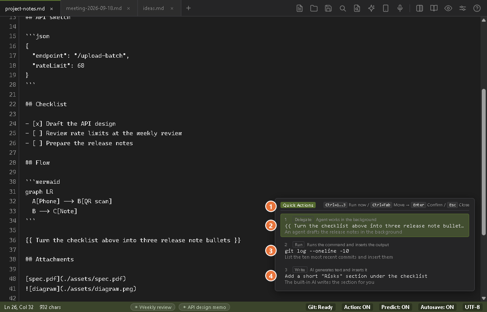
- Panel header Key hints: Ctrl+1..3 runs a suggestion at once, Ctrl+Tab moves the highlight, Enter confirms and Esc closes
- Delegate Hands the work to an agent that runs in the background
- Run Executes a command and inserts its output
- Write The built-in AI writes text and inserts it
The cards are chosen to be unlike each other in kind. Picking one takes you straight to that verb's entry point.
- Inserts a
{{ … }}or[? … ]slot and hands it to an agent
- Runs a shell command such as
git status
- Has the AI draft text
- Appears only when a non-Jev external model is configured (an OpenRouter chat model or your own
/predictserver)
With the built-in local rules (the default), you get Delegate and Run cards, typically in the order Delegate, Run, Delegate.
When Jev is set up: the cards are the same built-in ones, and Jev picks the ones that fit your note and ranks them first. Jev never writes text. How to set it up and where the data goes is under "data that is sent", below.
Cards that run a shell command always go through a safety check first. If it finds a destructive command such as rm, dd or mkfs, a write into a protected system directory, or a fork bomb, the card is not run and the reason is shown. It guards against known dangerous patterns, so read the command yourself before you accept it.
Limits and details (panel behavior, auto-suggest, badge)
- Hint line: While the panel is open it shows "Ctrl+1..3 Run now / Ctrl+Tab Move → Enter Confirm / Esc Close".
- A bare Enter: If you press Enter without first moving the selection with Ctrl + Tab, it is just a newline. No card runs, and the panel closes.
- It stays out of your typing: Bare digits, a bare Tab and Ctrl + Enter (the Auto selector's key, which also runs slots) are never taken by the panel.
- Auto-suggest: Besides Ctrl + J, the panel can appear on its own after a typing pause (on by default). To stop that, choose "Manual trigger only (suppress auto-popup, press Ctrl+J)" under Settings → Agent, in the "Suggestions (Quick Actions)" section. The delay before it appears is set there too.
- Changing the key: The shortcut itself can be reassigned under Settings → Shortcuts.
- Status bar badge: The "Action" badge shows the current mode, and each click cycles On → Manual → Off → On. It reads "Action: ON", "Action: Ctrl+J" (your configured key; Cmd+J on macOS) or "Action: OFF". It mirrors the two checkboxes under Settings → Agent → Suggestions (Quick Actions). While it is Off, Ctrl + J does nothing.
- Commands with no output: If a Run card (an
shcard) command succeeds but prints nothing,> (出力なし)is inserted so you can tell it ran. This applies to Quick Actions only (the command bar shows "(no output)" in its result tab). The inserted text is Japanese in both the English and Japanese builds. - Working directory: Run-card commands run in MD-Memo's own working directory. For example,
git status -sreturns the state of the folder where MD-Memo was started.
Limits and details (data that is sent, and how Jev is used)
- By default, suggestions come from the built-in local rules only. Nothing from your note leaves your machine.
- Data is sent only if you set up one of the following.
- Jev through OpenRouter: leave the Base URL and Model Name at their defaults (
https://openrouter.ai/api/v1,jev-latest) and enter an OpenRouter API key (sk-or-v1-…). Requests go tohttps://openrouter.ai/api/v1/systemone, which is fixed. - Jev at TypeSafe: set the Base URL to
https://api.typesafe.aiand enter your TypeSafe API key. Requests go tohttps://api.typesafe.ai/v1/systemone. - An OpenRouter chat model: set the Model Name to something other than Jev (for example
google/gemini-…) and enter an OpenRouter key. That model is asked to write the candidate text (sent to OpenRouter'schat/completions). - Your own server: a Base URL that is none of the above receives
<Base URL>/predict. - There is one key field, so the kind of key is judged from the Base URL and the shape of the key (OpenRouter keys start with
sk-or-). A TypeSafe key entered next to the OpenRouter Base URL is sent nowhere; you get the built-in candidates. - Jev does not write text. All the built-in candidates are laid out and Jev is asked once which one fits your note best; its answer reorders them. Only built-in candidates are ever shown.
- When Jev cannot answer (a wrong key, no credit, a network error, a 5-second timeout, or low confidence), you get the built-in rules' candidates. The key is never resent to another service.
- What is sent is an excerpt around the caret: up to 1,500 characters before it and 500 after (about 2,000 in total). Nothing is sent for an empty note.
- The Base URL and Model Name fields come pre-filled with
https://openrouter.ai/api/v1andjev-latest, but while the API key is empty, nothing is sent. - The safety check is the AST guardrail. The glossary explains these internal names.
Editor & Split Mode (Ctrl+\)
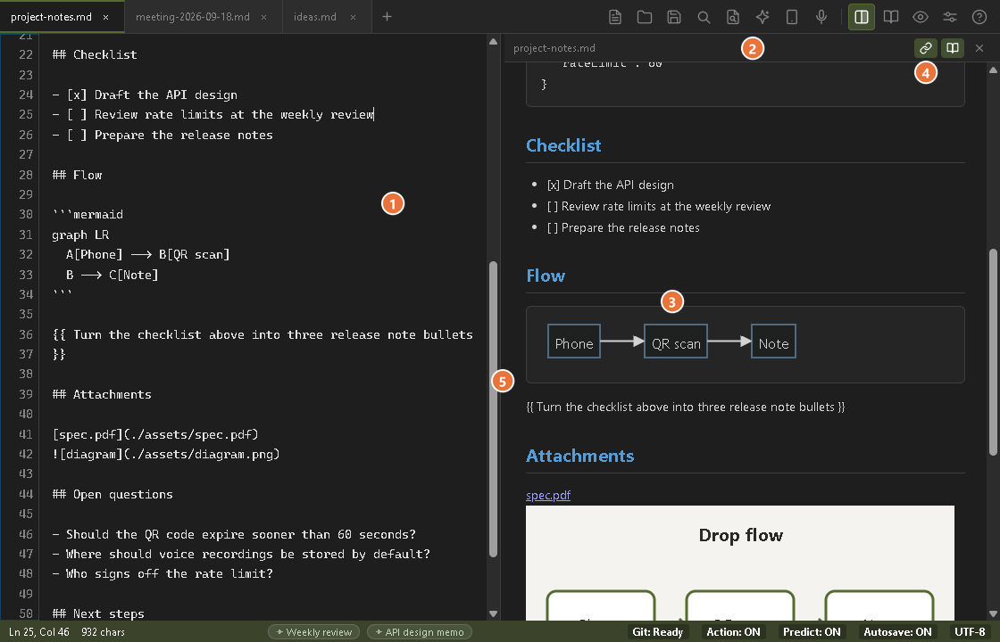
- Editor The Markdown source
- Preview header The note name and the pane buttons
- Mermaid diagram Drawn from the code block in the note
- Scroll sync Toggles whether both panes scroll together
- Divider Drag to resize the panes, double-click to reset to 50:50
- Switch to two panesClick the split icon in the header, or press Ctrl + \ (macOS: Cmd + \)
- Make the right pane a previewThe preview icon on the right pane shows the live HTML rendering
- Scrolling stays in syncScroll one pane and the other follows
To open only the preview to the side, use Ctrl + Alt + V (macOS: Cmd + Option + V).
Comment Out Lines (Ctrl+/)
<!-- -->) and bring them back with the same key. Hidden text does not show in the preview, and a task or slot inside a comment never runs. Ctrl + / No setup needed- Put the caret on a line, or select linesEvery line the selection touches is used. A selection that ends at the very start of a line leaves that line out
- Press Ctrl + /(macOS: Cmd + /) Each line becomes
<!-- line -->. The indentation stays in front:- itembecomes<!-- - item --> - Press it againWhen every line is already a one-line comment, the comments come off. Each press is one undo step (Ctrl + Z)
- One comment around the lines: Settings → General → "Toggle comment writes" → "One comment around the lines" puts
<!--before the first line and-->after the last. The same key takes that comment off again. - Lines left as they are: empty lines, the result markers of a run (
<!-- md-memo:... -->), a line that already contains-->(the comment would end there) and a line that is part of a longer comment. The status bar names those lines. Nothing changes, with a message, when an unclosed<!--comes earlier in the note (the new-->would close it and hide everything in between), or when the lines are inside a code block (there<!--is plain text). - Commented-out tasks do not run:
[[ @llm ]],[[ $ ]],{{ @agent }}, the{{ }}-style slots and the approval gates of recipes are ignored inside a comment by Ctrl + Enter, the run button and the slot parser. With the caret inside a comment, Ctrl + Enter does nothing (it never runs another slot instead) and says so in the status bar. - The preview hides comments: a line that holds only a comment disappears without splitting the paragraph around it.
<!--inside a code block or inline code is code, and stays visible.
File Links & Drag & Drop
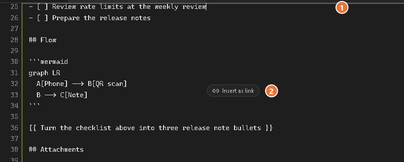
- Pulsing frame The editor is a drop target for the dragged file
- "Insert as link" badge Dropping inserts a Markdown link to the file. A file the app cannot reference by path is first copied into the note's assets folder
- Drag a fileBring it over the editor. The frame pulses and an "Insert as link" badge appears
- Drop it onto the textDropping onto the tab bar or the header still opens the file as a new tab, as before
- The link is insertedAt the caret:
for images,[name](...)for everything else. Several files give one link per line
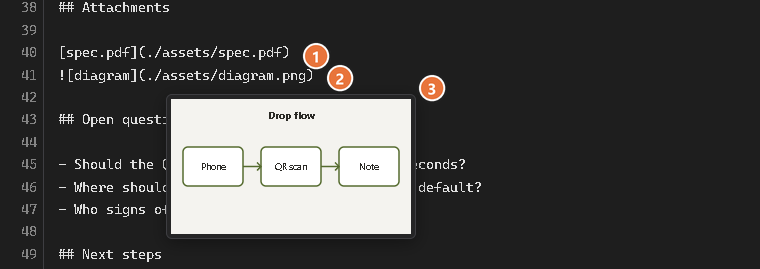
- File link Ctrl+click opens the file, and Alt+click shows it in the file manager
- Image link Point at it for 0.3 seconds to see a thumbnail
- Thumbnail A preview of the linked image
Limits and details
- Files are copied in: The embedded browser does not expose the original path of a dropped file, so MD-Memo copies the file (up to 25 MB each) into
./assets/next to the note and links to it relatively. The original location is not recorded. - Link format: Spaces and parentheses in the link are percent-encoded (
%20,%28,%29), so the Markdown stays valid. Ctrl + Click still opens the file normally. - Links that can be opened:
file://links, absolute paths and note-relative paths open with the default app, andhttp://andhttps://addresses open in the browser. Other kinds of link (mailto:,javascript:and so on) are not underlined and cannot be opened from the editor. - What is underlined: Markdown links
[text](...), images(with a dotted line, because they also preview on hover) and barehttp:///https://addresses. The color is your theme's accent, a little lighter. The preview is unchanged. - While you hold the key: While Ctrl (macOS: Cmd) is held, the link under the pointer gets thicker and the pointer becomes a hand, so you can see what a click will open. Alt does the same for files; web addresses do not react to Alt.
- Hover hint: Rest the pointer on a link for about 0.3 seconds. For a file or folder the hint reads "Ctrl+click to open / Alt+click to show its location", and for a web address "Ctrl+click to open in the browser" (macOS: Cmd+click and Option+click). A local image also shows a thumbnail (up to 240×180).
- Long notes: The underline is skipped for notes over 100,000 characters (Ctrl + Click still works). It is refreshed when you pause typing, not on every key.
- macOS: The same code runs there, with Cmd and Option in place of Ctrl and Alt. It has been checked in the Windows app so far, and not yet on a real Mac.
Quick Capture (Windows)
Quick Capture, its hotkey and its toolbar button exist on Windows only. On macOS the toolbar button and the shortcut row in Settings do not appear, and there is no macOS version yet.
The popup is one row: a text field and three buttons, Send, AI Send and Capture. It stays on top of other windows and looks dark, rounded and slightly see-through. The Send button takes the accent color of your theme. The button names stay in English in every interface language.
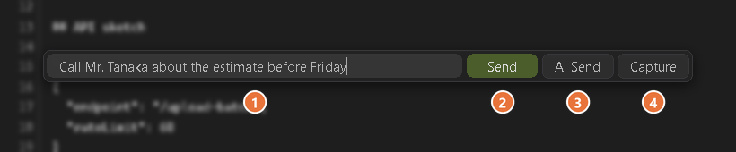
- Text field Type the note here. Leave it empty to send the text on the clipboard
- Send Adds the text exactly as typed (Enter)
- AI Send Corrects the text with the AI first (Ctrl + Enter)
- Capture Starts a screen capture (Ctrl + Shift + Enter)
- Open itPress Ctrl + Shift + Q in any program. The popup appears on top of what you are doing
- Type your noteA thought, a phone number, a to-do. If you leave the field empty, the text on the clipboard is used instead
- Press EnterThe text is added to today's scrap exactly as you typed it, and the popup closes
Four ways to open it
Keys inside the popup
| Button | What it does |
|---|---|
| Send Enter |
Adds the text exactly as typed. If the field is empty, the text on the clipboard is added instead. If both are empty, the popup just closes and nothing is added. |
| AI Send Ctrl + Enter |
First runs the text through the same AI correction as Alt + C in the editor, then adds it. While it waits, the button reads "Working...". If you close the popup in the meantime, the note is still saved. LLM setup needed |
| Capture Ctrl + Shift + Enter |
Captures a window or an area of the screen, reads the text in it and adds both to your note. What you typed becomes the caption. See Screen Capture (Windows). |
Where the note goes. Each note is added to the end of today's scrap file, <scrap folder>/YYYY-MM-DD.md (by default ~/Documents/md-memo/scraps), and is separated from the entry before it by a blank line. If that note is open in MD-Memo, it updates at once. See Daily Scraps Model.
Limits and details (hotkey, closing, AI Send)
- Change or turn off the hotkey: Settings → Shortcuts tab, the row "Quick Capture (global, opens the note popup)". Clear the key and the hotkey is off (the toolbar button, the tray item and the palette entry keep working). If another program already uses the combination, the change is refused with a message and the previous key stays.
- Closing by itself: The popup closes 1 second after it loses focus. If focus comes back in time, it stays. Esc closes it at once.
- Japanese input: While an IME conversion is in progress, Enter and Esc go to the IME first. Confirm the conversion, then press Enter again to send.
- Which window you were in: When you open the popup with the hotkey and use AI Send, the entry starts with a line
> [context: <title of the window you were in>]. Nothing is added when you open it from the toolbar, the palette or the tray, because the window in front is then MD-Memo itself. A plain Send adds only your text. - If the AI cannot correct the text: AI Send uses the text model in Settings → AI Models. If "Enable AI typo & error correction (Alt+C)" is off in Settings → General, if no text model is set, or if the model does not answer within 30 seconds, the text is saved as you typed it. A note is never lost or held up.
Screen Capture (Windows)
Screen Capture starts from the Quick Capture popup and exists on Windows only. There is no macOS version yet. It cannot pick a single element inside a web page (that would need a browser extension), only a window or a rectangle.
- Open Quick CapturePress Ctrl + Shift + Q. If you want a caption, type it now: it is written above the picture in the note
- Start the captureClick Capture, or press Ctrl + Shift + Enter. The popup closes, the screen dims slightly, the pointer becomes a crosshair and a hint bar appears at the top of the main monitor
- Pick what to capturePoint at a window and click it, or drag a rectangle (see below)
- Wait a few secondsThe picture is saved, then the text in it is read, and one entry is added to today's note. There is no progress display while the text is read
No picture of the whole screen is taken, and nothing is read from the screen, until you have chosen.
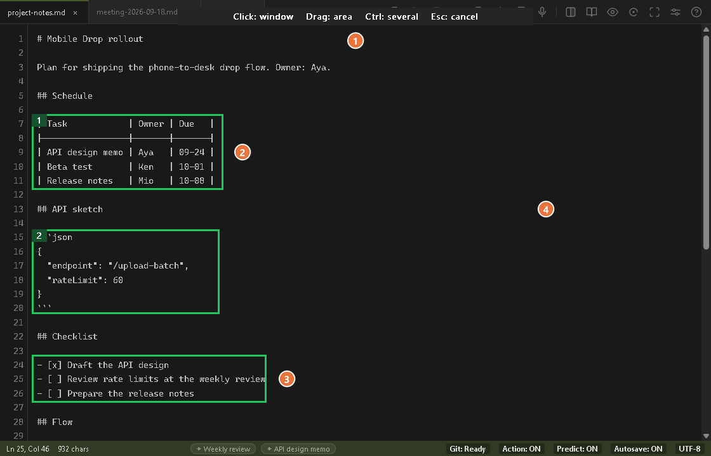
- Hint bar The keys: click a window, drag an area, hold Ctrl to pick several, Esc to cancel
- Numbered green frames What you have picked so far. They are captured in this order
- Green frame being dragged Release the mouse to add it to the picks. Release Ctrl to capture them all
- Dimmed screen Nothing is read from the screen until you have chosen. Esc or a right-click cancels
Choosing what to capture
What is added to the note
**[18:12:15] 画面キャプチャ**
<the caption you typed, if any>
> [context: <the window you were in>]
**1. <title of the window>**

> the recognized text, one quoted line per line- The header word
画面キャプチャ("screen capture") is Japanese in every interface language. - The
> [context: ...]line appears only when you opened Quick Capture with the hotkey. - Each pick gets its own numbered block, in the order you picked. A free rectangle is labelled like
1. 選択範囲 (200×100): "selected area", then its width × height. - Window titles are kept whole up to 400 characters (the title of an Explorer window is its full folder path).
- If the text cannot be read, that block has the line
> (OCRでテキストを抽出できませんでした: <reason>)instead (Japanese in every interface language). The picture is saved before reading starts, so a failed read never loses it.
Limits and details (what can be picked, privacy, saved files)
- What can be picked: visible top-level windows. Not minimized windows, windows on another virtual desktop, the desktop background, tiny windows under 24 px or click-through overlays. The green frame shows the window's visible edge, without its invisible resize border.
- How the picture is taken: A window that is partly covered by another window, or partly off the screen, is captured from the window itself, so the covering window does not appear. Any other window, and every rectangle you drag, is read from the screen. Some apps (video players, protected content) can come out black.
- Saved files: Every capture is saved as a PNG in
<scrap folder>/assets/, namedYYYY-MM-DD-HHMMSS-cap<N>.png, and linked from the note. You can reopen and edit it later (in Paint, for example). - Reading the text: The pictures are read one after another, in the order you picked them, with the same OCR as the hot folder: the cloud vision model first, the on-device engine as the fallback.
- Privacy: With the default setting, the captured pictures are sent to the vision model set under Settings → AI Models → Image OCR (Vision) (Gemini and so on). To read them on your PC only, tick "Keep images on this PC" in Settings → Sync → Hot Folder section. The text is then less accurate.
Hot Folder: Images & Audio to Notes
- Images: the cloud vision model reads them first, and the on-device engine is the fallback
- "Keep images on this PC" reads them on the PC only
- Audio: Gemini (cloud), or Whisper on this PC (Windows x64)
- Tray menu item "Open inbox folder", and the Explorer Send To entry
- Images: the cloud vision model only. There is no on-device engine, so the "Keep images on this PC" option is hidden
- Audio: Gemini only. Whisper is not available (the settings say "On-device Whisper is only available on Windows (x64) for now.")
- There is no tray and no Send To menu. Open the folder from the command palette
- The
md-memo ocrcommand works, with cloud OCR only
Turn it on
- Open the settingSettings → Sync tab, the section "Hot Folder (auto OCR & transcription)"
- Tick the checkbox"Watch a folder: images are OCR'd, audio is transcribed, both appended to today's scrap"
- Check the folder"Watched Folder Path:" starts as
~/Documents/md-memo/inbox. Change it with Browse... if you like, then press Save - Drop files inCopy or move a picture or a sound file into that folder. Files that were already waiting are handled once when MD-Memo starts. After that, each new file is handled as it arrives, once it has finished copying
- Read the resultToday's note gets a new entry. The file itself is moved into the assets folder next to your scraps
| File type | Extensions | What is added to today's note |
|---|---|---|
| Image | .png .jpg .jpeg .bmp .gif .webp |
The text read from the picture, as a quoted block, followed by the picture as  |
| Audio | .mp3 .wav .m4a .ogg .flac |
A **[HH:MM:SS]** line, the transcript as a quoted block, and a link to the audio file |
A processed file is moved to <scrap folder>/assets/<YYYY-MM-DD-HHMMSS>-<original name>. That also happens when reading or transcribing fails. A failure leaves a line such as > (OCRでテキストを抽出できませんでした: <reason>) or > (文字起こしに失敗しました: <reason>) in the note (Japanese in every interface language), and the file is still there.
Which engine reads the images
- By default: the cloud vision model set under Settings → AI Models → Image OCR (Vision), Gemini for example, is tried first. It is far more accurate. If it fails, the on-device engine (Windows only) takes over.
- To keep images on your PC: tick "Keep images on this PC: read them with the on-device OCR only (less accurate)" in the same Hot Folder section. The image is then never sent out. It applies to the hot folder, Screen Capture, the Send To entry and the
ocrcommand (below), but not to pasting with Ctrl + V. It is Windows only, and hidden on macOS.
Which engine transcribes the audio
- The choice: Settings → AI Models tab, the group "Speech engine (hot folder & Discord)", Engine: "Gemini (cloud)" (the default) or "Whisper (on this PC, offline)" (Windows x64 only, described next).
- Where it applies: to the hot folder and the Discord Bridge. Live Voice Input (Ctrl + Shift + R) and Mobile Drop keep using Gemini.
- Keys: The voice settings reuse the API key of Image OCR (Vision) when they have none of their own.
Opening the folder
- Tray menu (Windows): right-click the tray icon and choose "Open inbox folder". It is shown only while the hot folder is on.
- Command palette (Windows and macOS): Ctrl + Shift + P, then "Open inbox folder" (macOS: Cmd + Shift + P). It is offered only while the hot folder is on.
Limits and details (folder, file handling, settings names)
- Off by default: nothing is watched until you tick the checkbox and save.
- Timing: files already in the folder are checked once at startup, then new files are picked up live, after their writing has settled.
- Git sync: If Git sync is on for the scraps folder, the pictures and audio moved into
assets/are committed and pushed together with the notes. - Settings names: in the config file,
inbox.enabledandinbox.dirhold the switch and the folder,vision.ocrModeis empty for the default (cloud first) or"on-device", andvoice.engineis"gemini"(the default) or"whisper-local".
On-device Whisper (Windows x64)
Whisper is a speech recognition program that runs on your own PC, so the audio is transcribed offline. It is available on 64-bit Windows only. Nothing is sent out unless you turn on the retry option under Advanced below. It works for the hot folder and the Discord Bridge only.
- Choose the engineSettings → AI Models → "Speech engine (hot folder & Discord)", Engine: "Whisper (on this PC, offline)". A panel with two parts to download opens
- Download the Whisper programPress Download next to "Whisper program" (about 9 MB). A progress display shows how far it is. Cancel stops it, and the next Download continues where it stopped. Remove deletes the part again
- Choose a model and download itPick one under "Model" and press Download. The default is kotoba-whisper v2.0 quantized (about 513 MB)
- SaveWhen both parts are installed, the panel says "Ready: audio is transcribed on this PC." Press Save, and audio in the hot folder is transcribed on your PC
| Model | Size | Good for |
|---|---|---|
| kotoba-whisper v2.0 quantized Default | about 513 MB | Japanese-specialised. A little smaller and faster than the full-precision one |
| kotoba-whisper v2.0 full precision | about 1.4 GB | Japanese-specialised, slightly more accurate. Uses more disk and memory |
| Whisper large-v3-turbo quantized | about 547 MB | Multilingual. For Japanese alone, the kotoba models are better |
| Whisper small quantized | about 181 MB | Light and fast, multilingual. Names and fast speech are more often wrong |
| Whisper base | about 141 MB | Lowest accuracy. Good for a quick test |
| Custom: a model file on this PC | - | Choose a ggml .bin file with Browse.... Pick "All Files" in the dialog to see .bin files |
| Custom: download from a URL | - | Enter an https address. You can also enter a SHA-256 to verify the download against (recommended) |
The names in the model list are written in Japanese in every interface language, with the size after each. The parts are stored under %LOCALAPPDATA%\md-memo\components. The settings screen shows the exact path after "Stored in:".
Advanced settings and details
- Language: Empty means auto-detect. Examples:
ja,en. - Threads (0 = auto): How many processor threads it may use. 0 lets it choose.
- Initial prompt: Names or terms to favour, so they are recognised more reliably.
- If Whisper fails, retry with Gemini (sends the audio out): Off by default. When on, audio that Whisper cannot transcribe (or Whisper not being installed) is sent to Gemini instead.
- Audio formats: Audio in m4a, mp3 and similar formats is converted on your PC before it is recognized.
- Not on macOS: The settings there show "On-device Whisper is only available on Windows (x64) for now."
Send To menu and the ocr command
To read a single image on demand, without opening any window, right-click it in Explorer, or run one command. The text goes to today's scrap the same way as in the hot folder, with the same engine choice. Send To: Windows only
- Add the menu entrySettings → Agent tab → "OS Integration (Send To)": press Add. "MD-Memo (OCR)" now appears in Explorer's Send To menu. Remove undoes it, and a badge shows whether it is installed
- Send an imageRight-click an image file in Explorer, then choose Send to → MD-Memo (OCR). No window opens
- Find the textIts text is appended to today's note
The entry runs md-memo ocr for you. You can run it yourself in a terminal too, on Windows and macOS:
# Read one image and add its text to today's scrap
md-memo ocr C:\scans\receipt.png
# OCR text appended to C:\Users\you\Documents\md-memo\scraps\2026-09-24.md
# Print JSON instead (put --json before the file name)
md-memo ocr --json C:\scans\receipt.pngIt works while MD-Memo is closed. It reads the Image OCR (Vision) settings and the scraps folder from config.json. It prints the path of the note, or (no text recognized) when there was no text. On macOS it uses cloud OCR only, and there is no Send To menu.
Live Mermaid Diagrams & Image Rendering
```mermaid block is drawn right in the preview. You can also export it as a high-resolution PNG image.- Flowcharts, sequence diagrams and Gantt charts written in
```mermaidare supported - They are rendered as diagrams in real time in the preview
- If a diagram is hard to read, press the half-filled circle at its top-right corner to switch between dark and light. A light diagram is drawn on a white card. The choice is kept
- Right-click a diagram and choose "Render Image..."
- It works with Gemini (Nano Banana 2 Lite) and exports a high-resolution PNG image
Limits and details (image settings)
- Choose the model, aspect ratio and resolution under "Image Generation (Mermaid & Infographics)" in Settings → AI Models.
- If the Gemini API key field is empty, the Vision key is used, then the Text key, in that order.
- The image is saved as
assets/diagram_<number>.png, andis inserted. Save the note first to get a relative link. - A note that is not saved yet has no folder, so the link holds the full path of the app's own
assetsfolder (on macOS, under~/Library/Application Support/md-memo). A space in it is written as%20, and the preview turns it back into the real path. - Diagram colors: the button on each diagram switches dark and light. Settings → General → "Diagram (Mermaid) colors" also offers Gray and Green, both on a white card.
Parallel Daily Scrap Search (Ctrl+Shift+F)
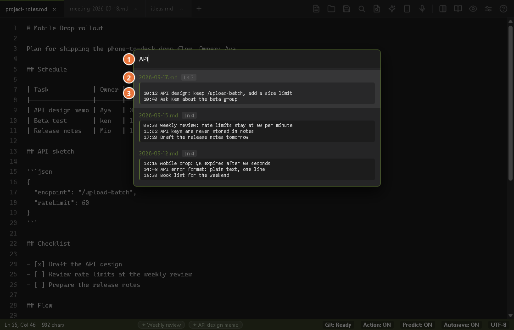
- Search box Searches every daily scrap as you type
- File name and line number Where the match is
- Matching line Shown with the line before and after it. Enter or a click opens the file at that line, and Tab inserts the line into your note
- Open the search modalCtrl + Shift + F (macOS: Cmd + Shift + F). The text you selected, or with nothing selected the word just before the caret, is already in the search box and searched
- Type a wordIt searches across all past daily scraps. Change the query if the first guess is not what you wanted
- Click a result lineYou jump straight to that line (Enter does the same)
- Or quote the linePress Tab (or Shift + Enter) on a result and that line is inserted at the caret of your note, without leaving it. It replaces a selection, like a paste, and Ctrl + Z undoes it
Limits and details
It uses all available CPU cores (runtime.NumCPU()) to run a multithreaded, case-insensitive substring search (plain text, not a regular expression) across your historical scraps.
- The search works line by line, so a selection of several lines starts the search with its first line.
- The word before the caret is the last word of the line up to the caret: a Latin word (
ESP32,foo/bar.go) or a run of katakana and kanji. A trailing particle or ending in hiragana and the punctuation after the word are skipped, soESP32のピン配置なんだっけ？starts the search withピン配置. - Text selected in the preview also counts. Tab needs the editor to be visible: while the preview covers it, it shows a message instead.
- Enter, Tab and the arrow keys are left to the IME while a conversion is open.
- Ctrl + F (find in the note) also starts with the selected text, in the editor or in the preview; several lines give the first line.
Mobile Drop · Send from your phone (Ctrl+Shift+U)
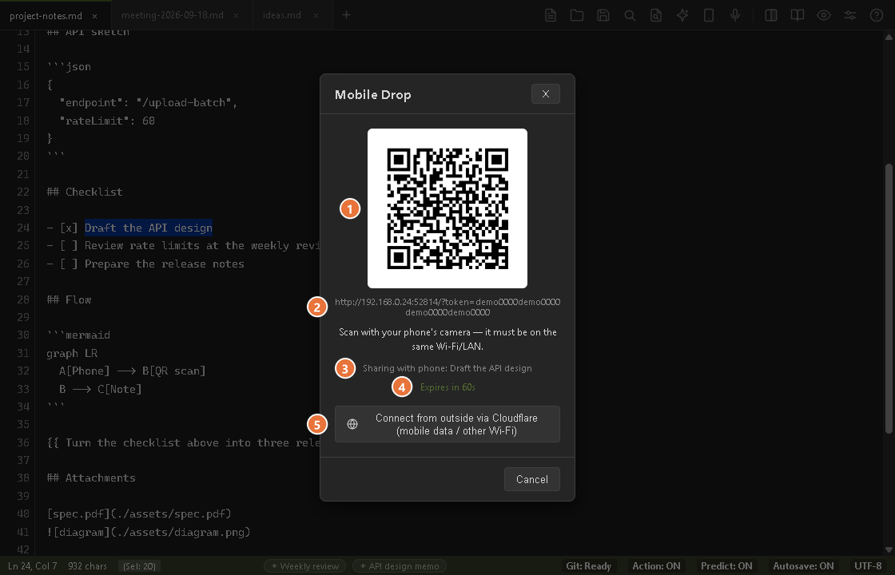
- QR code Scan it with the phone camera (phone and PC on the same Wi-Fi / LAN)
- Address The one-time address behind the QR code
- Sharing with phone The text selected in the editor is shown on the phone (the "Text from PC" card)
- Countdown Time until the idle timeout. When it runs out, the dialog closes and the address stops working (activity on the phone extends it)
- Switch to an outside connection An optional switch to a Cloudflare tunnel, for mobile data or another Wi-Fi
- Open the dialogClick the phone icon in the toolbar, press Ctrl + Shift + U (macOS: Cmd + Shift + U), or choose Mobile Drop in the Command Palette
- Scan the QR code with the phone cameraThe phone must be on the same Wi-Fi (the same LAN) as the PC. The address is also shown as text under the code, so you can type it in
- Fill the send trayAdd photos or files (up to 10 items, 60 MB total), a voice note and text, in any combination
- Press "Send all"There is only one button. An upload progress indicator shows while it sends
- It is appended to the noteThe dialog closes and the content is appended to the end of the active note. Each item gets its own heading:
## Mobile Drop [14:20:05] — <filename>
The page that opens on the phone
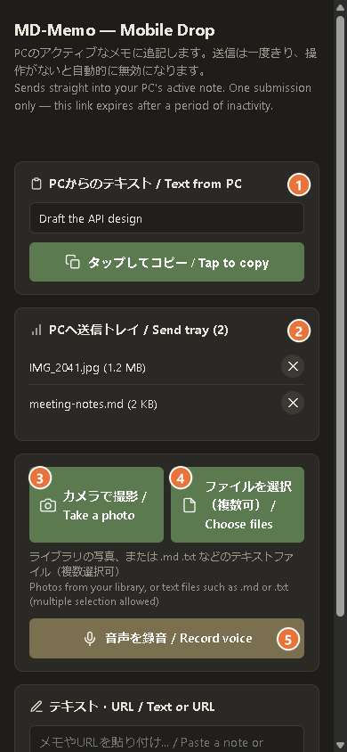
- Text from PC The text selected on the PC. Tap the button below it to copy it on the phone
- Send tray Everything you have added so far (a photo and a note file here). ✕ removes an item
- Take a photo Takes a photo with the phone camera
- Choose files Pick photos or text files from the phone (several at once)
- Record voice Opens the phone's own recorder. The recording is added to the tray and transcribed on the PC
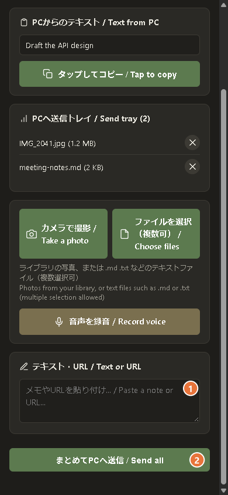
- Text or URL box Paste a note or a link to send it as text
- Send all Sends the tray and the text to the active note on the PC in one go (one submission per session)
| On the phone | What ends up in the note |
|---|---|
| Photos / files | Photos are transcribed to Markdown by the vision model. .md and .txt are added as they are; .html, .js, .json, .py and other code or config files are wrapped in a fenced code block. Shift_JIS text files are converted automatically. |
| Voice note | Transcribed the same way as Voice Input and added as text. |
| Text or URL | The text exactly as typed or pasted. A lone URL becomes a Markdown link. |
Where photos and voice notes go
- Photos: The same vision model as Ctrl + V image OCR (Settings → AI Models → Image OCR (Vision)) transcribes them to Markdown. The photo itself is not saved
- Voice notes: Transcribed the same way as Voice Input (the same Gemini model) and added as text
- A local (Ollama or LM Studio) vision model does OCR even without a key
- Whether the key is missing, the model is not supported, the transcript is empty, or there is an HTTP error or a timeout, the photo or voice note is not lost
- It is saved to
./assets/just like an image pasted with Ctrl + Shift + V, and the note gets a link plus a one-line reason - A toast tells you how many items were handled this way
Limits and details (the lines added when an item is saved, and where)
When an item is saved, one of these lines goes into the note, depending on the situation. These inserted lines are Japanese in both UI languages.
| Situation | Photo | Voice note |
|---|---|---|
| Nothing is configured |  and > 画像OCRをスキップし、画像として保存しました: <error> (設定 → AIモデル → 画像解析) |
[name](./assets/...) and > 文字起こしをスキップし、音声として保存しました: <error> (設定 → AIモデル → 音声入力) |
| Any other failure | > 画像OCRに失敗したため、画像として保存しました: <error> |
> 文字起こしに失敗したため、音声として保存しました: <error> |
- Where it is saved:
./assets/YYYY-MM-DD-HHmmss.<extension>, next to the note. If there is no saved note, the workspace folder; if that is missing too, the app data folder (then the link is afile://link). A name collision appends-2,-3. - If saving fails too: Only when saving to assets fails as well,
[Mobile Drop: <filename> の処理に失敗しました: <error>]is appended after that item's heading. The remaining items arrive normally.
Limits and details (what you can send, and size limits)
- Up to 10 photos or files, 60 MB in total.
- Per-item limits: an image 20 MB, an audio file 25 MB, a text file 2 MB. Any other binary file is refused.
Limits and details (the phone page and "Text from PC")
- Page layout: From top to bottom: the "Text from PC" card, the "Send tray" (each added item shows its name, size and a
✕to remove it), camera / file picker (several files) / voice recording, and the text box. There is only one send button. - "Text from PC": The text selected on the PC (or the clipboard text, if nothing was selected when the dialog opened) is shown with a one-tap copy button. It refreshes every 2 seconds and shows up to 64 KB.
- On the PC: The dialog shows it as "Sharing with phone: ...", truncated to 80 characters.
Choose a connection
- The phone and the PC must be on the same network
- Nothing leaves that network
- For voice notes, the phone's own recorder app opens
- Location is neither requested nor attached
- Press "Connect from outside via Cloudflare (mobile data / other Wi-Fi)" in the dialog
- It opens an account-free Cloudflare Quick Tunnel, and the QR code switches to a temporary
https://…trycloudflare.comaddress - For voice notes, you can record right in the page (HTTPS)
- Location can optionally be attached, once
- The transferred data passes through Cloudflare's servers
Limits and details (the Cloudflare tunnel)
- It needs
cloudflared. MD-Memo never downloads or installs it for you. - If it is missing, the dialog shows the install command (Windows:
winget install --id Cloudflare.cloudflared -e, macOS:brew install cloudflared) with a Copy button. Run it, then press the button again. - While the tunnel is up, the transferred data passes through Cloudflare's servers.
- About the 90 seconds: The tunnel's 90 seconds is an idle timeout. Activity on the phone re-arms it. It is not a fixed "valid for 90 seconds after it is issued" limit.
Limits and details (safety and limits)
- It exists only while the dialog is open. Opening it starts a small server on the PC. It stops after one submission, after 60 seconds without activity, or when you close or cancel the dialog. Opening the page on the phone, and any work on the phone (adding a file, recording, typing), all count as activity and reset that timer. So even a large batch does not trip the 60-second idle timeout.
- One submission per QR code. To send more, open the dialog again. The one-time token is checked before the request body is even read.
- Only someone with the code can send. The address contains a random one-time token, and a request without it is refused before anything is read.
- Photos and cloud models. If your vision model is a cloud service such as Gemini, photos are sent to that provider, exactly as when you paste an image with Ctrl + V. Even with no API key, the photo is not lost: it is saved as an image (see "Not set up, or it fails" above).
- Location is opt-in and tunnel-only. Only when connected through the Cloudflare tunnel (HTTPS), the phone may attach its location once, as a single one-time attempt. Only the first item's heading carries it:
## Mobile Drop [14:20:05] — <filename> (34.693, 135.502). Over plain LAN HTTP, location is never requested or attached.
Limits and details (how sending survives interruptions)
On a plain LAN connection, recording a voice note opens the phone's own recorder app. To keep the session alive meanwhile, the phone page works as follows.
- Just before handing over to the camera, the file picker or the recorder app, it asks the PC to keep the session open up to 120 seconds longer. The PC session normally ends after 60 seconds without activity, and the server caps such a request at 180 seconds.
- When you come back to the page, it pings the PC.
- A picked file is copied into memory right away, because recorder apps may still be writing to it or may revoke access.
- While files are being read, the Send button waits.
- If sending fails, the page checks whether the PC session is still alive. If it is, the page resends once automatically, and if that fails too it shows "network error - please try again".
- If the PC session has ended, it shows "the connection to the PC is gone (closed or timed out) - reopen Mobile Drop on the PC and scan the QR code again".
- Recording directly in the page, without opening a recorder app, needs the HTTPS Cloudflare tunnel.
If the page will not open on the phone
- Check that both devices are on the same Wi-Fi. Guest networks and some routers stop devices from talking to each other ("AP isolation"). A VPN on the PC or the phone can also get in the way.
- On Windows you may see a firewall prompt for MD-Memo the first time. Allow it on private networks.
- The QR code uses the address of the network adapter that carries your default route (virtual adapters such as WSL or Docker are skipped). If your phone is not on that network, use the Cloudflare connection above.
The toolbar icon can be hidden or moved under Settings → General → Toolbar & right-click menu. The shortcut and the Command Palette entry work either way.
Discord Bridge — Send From Your Phone (works even while closed)
One-time setup
- Create the botOpen discord.com/developers/applications → New Application, name it, then on the Bot tab press Reset Token and copy it (shown only this once)
- Invite the bot to a server you ownOn the Installation tab, check Guild Install (needed for a bot to join a server and DM you). On the OAuth2 tab, check the
botscope and the Send Messages bot permission, switch the Integration Type dropdown above the generated URL to Guild Install, then open that URL and authorize it into any server you own (a private one made just for this is fine) - Find your numeric user idDiscord → User Settings → Advanced → turn on Developer Mode, then right-click your own name → Copy User ID. This gives an ~18-digit number — not your visible username
- Configure MD-MemoSettings → Sync → "Mobile capture via Discord": paste the bot token and the id from step 3, tick enabled, press Test Connection, then Save once it succeeds
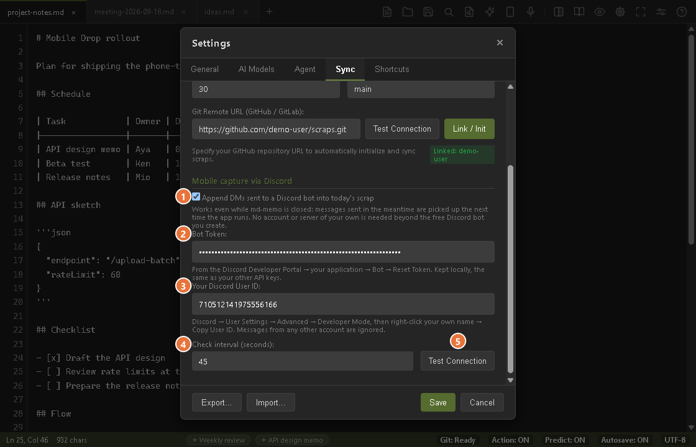
- Enable nothing happens until this is checked
- Bot Token from the Bot tab of the Developer Portal
- Discord User ID the numeric id (Copy User ID in Developer Mode)
- Check interval how often MD-Memo checks Discord while running (default 45s, 15-600)
- Test Connection confirms the token and id before you save
- Pasting the username instead of the numeric id — the field needs the numeric snowflake, not the name shown on screen. If Test Connection says `"..." looks like a username`, this is why.
- The invite's Integration Type is still "User Install" — a bot needs "Guild Install" to join a server and be allowed to DM you. A URL containing
integration_type=1fails authorization with "the scope provided for User Installation is invalid". - Sending an
@mentionin a server channel — MD-Memo only reads the bot's private DM with you. Click the bot's name/avatar and choose "Message" to open the actual DM conversation, then send it there.
Using it
- Open your DM with the botClick the bot's name in a member list or a mention, then choose "Message" on its profile card
- Send text, a photo, or a voice messageOrdinary Discord sending — typed text, a camera-roll attachment, or a voice message — works as-is
- Wait for it to landWithin the check interval (default 45s) while MD-Memo is running, or all at once the next time you open it if it was closed
| Sent on Discord | What lands in the scrap |
|---|---|
| Photo | Transcribed to Markdown by the same vision model Mobile Drop's photos use. If OCR is unset or fails, it is saved under assets/ and linked instead. |
| Voice message / audio file | Transcribed the same way as Voice Input (by Gemini), or on your PC if you chose the Whisper engine (see the hot folder). On failure it is saved as an audio file under assets/. |
| Text / URL | Appended as-is; a bare URL becomes a Markdown link. |
Each lands at the end of that day's scrap (scraps/YYYY-MM-DD.md) under its own ## Discord [14:20:05] heading. A caption sent together with a photo becomes two separate headings.
The fine print (who is allowed to send, how catch-up works, failures)
- Only one sender Only messages whose author matches the configured Discord user id are picked up; anything else that reaches the bot is silently ignored.
- First time it's enabled No DM history is replayed — only messages sent from that moment on are captured.
- Sent while MD-Memo was closed Nothing is lost: the message is still sitting in Discord, and the next launch's first check catches up on everything since the last one.
- Network trouble / a token you just changed A failed connection keeps retrying on its own with a growing delay; fixing the token in Settings and saving takes effect immediately.
- Interaction with Git sync If Git sync is enabled for the scraps folder, Discord's additions are committed and pushed automatically too — including any photo/audio file that fell back to
assets/, since it lives in the same folder.
Command Palette (Ctrl+Shift+P)
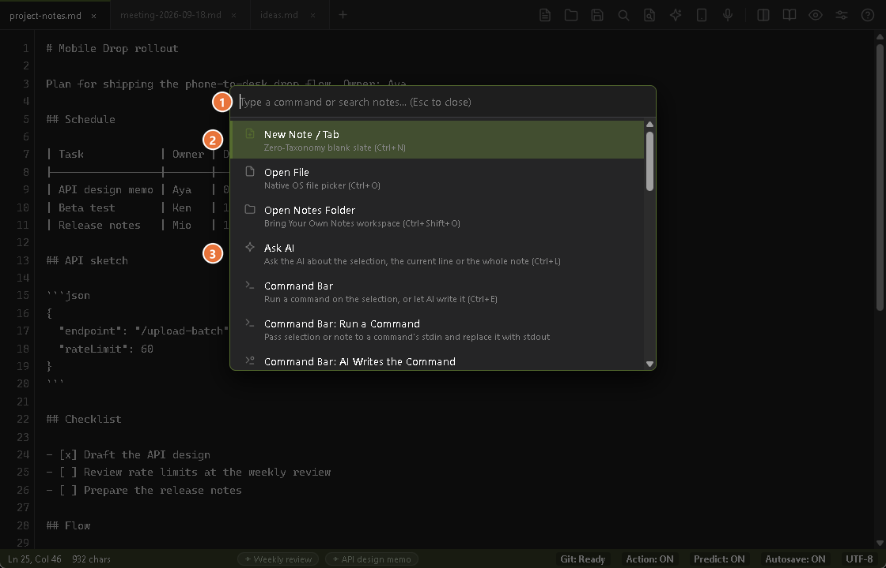
- Input field Type to filter commands and notes
- Highlighted command Press Enter to run it
- Description and shortcut Each command shows a one-line description and its assigned key
- Open the paletteCtrl + Shift + P (macOS: Cmd + Shift + P)
- Type to filterType part of a command name or a note title (substring match)
- Choose and runA command runs, and a note opens
Limits and details
- It searches the commands and the notes in the workspace folder you have opened.
- The AI and command entries are "Ask AI", "Command Bar" (opens in the mode you used last), "Command Bar: Run a Command" and "Command Bar: AI Writes the Command". The last two have no key by default.
- "Insert task snippet" opens the list of ready-made LLM, agent and command tasks at the caret. Insert one, then press Ctrl + Enter to run it (see Auto Selector).
- "Quick Capture" (Windows only) opens the small note popup (see Quick Capture). "Open inbox folder" (Windows and macOS) shows the folder the hot folder watches, and is listed only while the hot folder is on.
- Matching is a plain substring match, not a fuzzy search.
- Settings are not searchable. Open the settings screen with Ctrl + , (macOS: Cmd + ,).
03 Settings Reference
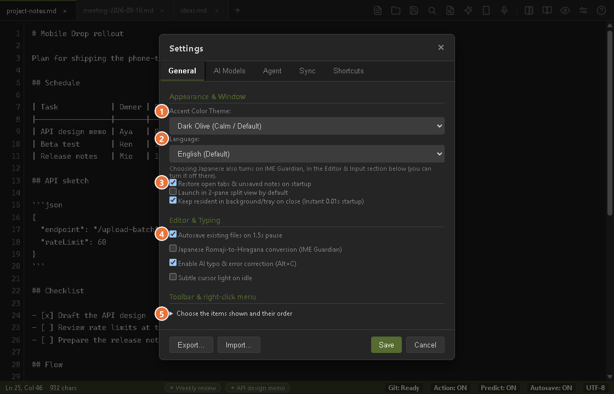
- Theme The accent color scheme
- Language The interface language: English or Japanese
- Startup and window Restore tabs and unsaved notes, start in split view, stay in the tray
- Editor and typing Autosave, IME Guardian, AI proofreading, cursor light
- Toolbar and right-click menu Choose the items shown and their order (see the steps below)
1. General Tab
| Setting | Default | Description |
|---|---|---|
| Accent Color Theme | Dark Olive | Choose between Dark Olive, VS Code Blue, Forest Teal, and Charcoal Monochrome. |
| Diagram (Mermaid) colors | Dark | Dark, Light, Gray or Green. The last three draw diagrams on a white card, which helps when a diagram is hard to read on the dark preview. The button on each diagram in the preview switches dark and light. |
| Language | English / Japanese | Switch the UI language. |
| Restore Open Tabs | Enabled | Restores unsaved buffers and previous tabs upon application launch. |
| 2-Pane Split by Default | Disabled | Always launches in split view when checked. |
| Resident in Tray | Enabled (Windows) | On Windows, the close button keeps MD-Memo in the tray instead of quitting, and Ctrl+Alt+M brings it back in milliseconds. macOS has no tray: closing the window always keeps MD-Memo in the Dock, and this checkbox is disabled there with the hint "Not available on this platform yet; this setting currently has no effect." |
| Autosave on 1.5s Pause | Enabled | Silently saves existing files upon a 1.5-second typing pause. |
| IME Guardian | Enabled only if the system language is Japanese (Disabled by default on macOS) | Protects code blocks against IME full-width character leakage. On macOS the OS input source cannot be switched automatically yet, so it starts off there and Settings shows a hint saying so. |
| Enable AI typo & error correction (Alt+C) | Enabled | Turns the Alt + C proofreading command on or off. |
| Subtle cursor light on idle | Enabled | Shows a soft glow around the caret when typing stops. |
| Ctrl+V turns web, Word and Excel content into Markdown | Enabled | Converts only HTML with structure (tables, headings, lists, links) to Markdown; code and logs are pasted as they are. Ctrl + Shift + V always pastes as it is. When off, Ctrl + V pastes plain text and Ctrl + Shift + V converts. |
| Toggle comment writes | One comment per line | What Ctrl + / writes: one <!-- --> per line, or one comment around the selected lines. See Comment Out Lines. |
| Toolbar & right-click menu | Everything shown | Show, hide and reorder the toolbar icons and right-click menu items. See "Adjusting the toolbar and right-click menu" below for the steps. |
Adjusting the toolbar and right-click menu
- Open the sectionIn Settings → General, open "Toolbar & right-click menu" ("Choose the items shown and their order")
- Choose what to showTick the toolbar icons and right-click items you want. Use the arrows to reorder them within their group
- Changes apply at once"Cancel" undoes them. "Reset to default" restores the original layout
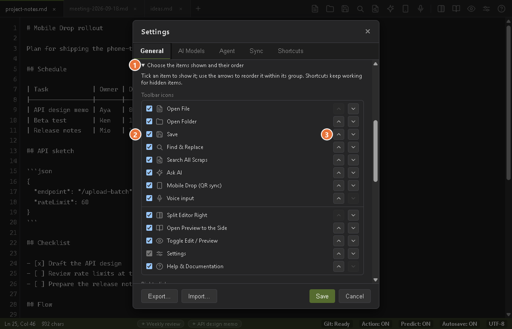
- Section title Choose the items shown and their order
- Checkboxes Tick to show, clear to hide (only the Settings icon always stays)
- Up and down arrows Move an item within its group
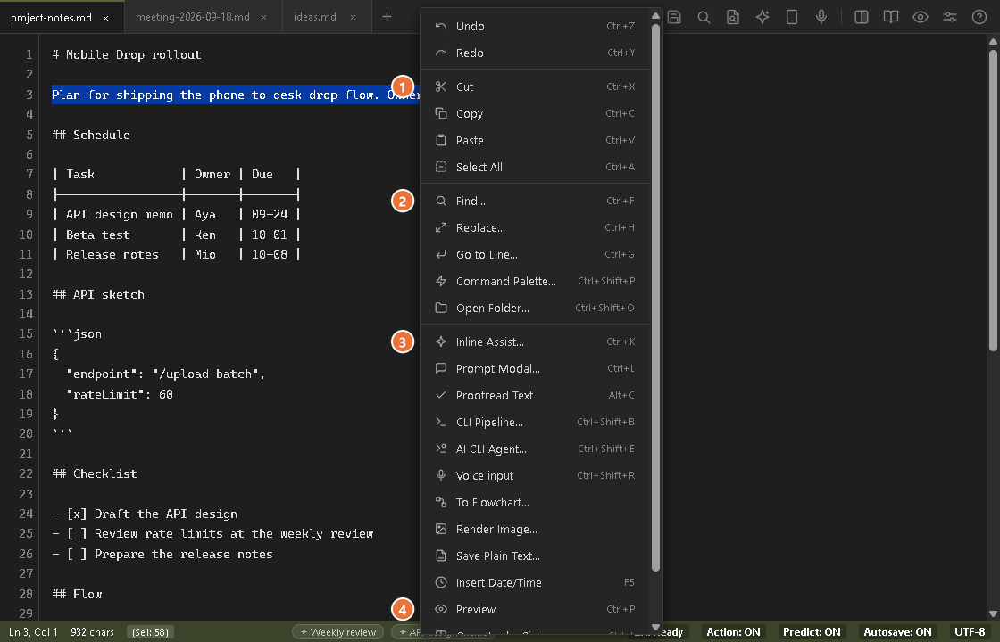
- Editing commands Undo, redo, cut, copy, paste, select all
- Navigation Find, replace, go to line, command palette, open folder
- AI and command bar Ask AI, proofread, Command Bar, voice input
- View Preview and open to the side (scroll the menu for Zen mode and full screen). Which items are shown can be changed in Settings
- The Settings icon can be reordered but not hidden (it always stays, so you can get back to the settings screen).
- Items you hide can still be used with their shortcuts and from the command palette.
The Export... and Import... buttons at the bottom of the Settings dialog carry your settings, agent definitions and skills to another PC in one package (.mdmemopack). Details: 6. Export and Import Settings (Packages).
2. AI Models Tab
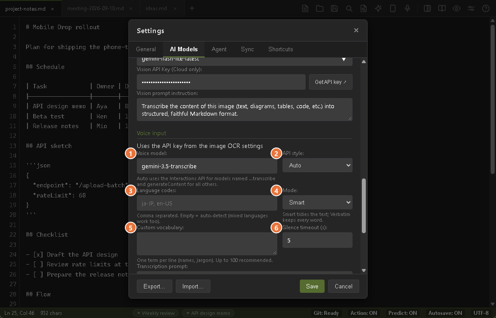
- Voice model The model used for transcription
- API style "Auto" picks the API from the model name, or you can force one
- Language codes Comma-separated. Empty means auto-detect
- Mode Smart tidies the text, and Verbatim keeps every word
- Custom vocabulary Names and jargon, one per line
- Silence timeout How many seconds of silence stop the recording automatically
- Feature → Which model setting it uses: the card at the top of the tab, showing which setting each feature reads. For example, Write (Ask AI) and Chat use the Text LLM, Ghost Text and Image OCR have their own settings, and Suggestions (Quick Actions) are configured on the Agent tab.
- Local AI (Ollama): a status badge with Start and Stop buttons for Ollama, plus Install Gemma 4, which installs Ollama if it is missing and pulls the
gemma4:e2bmodel. - Text LLM & AI CLI (Chat, Writing & CLI Agent): Base URL, model name, API key, and System Prompt. The protocol is detected from the URL and shown beneath it: Ollama, Gemini-compatible, or OpenAI-compatible.
- Inline Autocomplete (Ghost Text): its own URL, model, and key, plus the suggestion delay (default 500 ms; the settings screen allows 200–2000, but the effective minimum is 300 ms) and the maximum prediction tokens (default 30, range 10–100).
- Image OCR (Vision): the vision model and key, such as Gemini Flash Lite or Qwen 2.5 VL, plus a toggle "Automatically transcribe pasted images (Ctrl+V) using Gemini OCR" (on by default). When the toggle is off, or there is no API key, a pasted image is saved to assets and linked instead (like Ctrl+Shift+V). Pictures from the hot folder, Screen Capture and Send To are read with these settings too.
- Image Generation (Mermaid & Infographics): the model, aspect ratio, and resolution used by "Render Image...". If its Gemini API key is blank, it inherits the Vision key and then the Text key, in that order.
- Voice input: Right below the Image OCR (Vision) settings. For how to use it, see Voice Input. The settings are listed in the table below.
- Speech engine (hot folder & Discord): Right below the Voice input group. Engine chooses "Gemini (cloud)" (the default) or "Whisper (on this PC, offline)" (Windows x64 only). It applies to the hot folder and the Discord Bridge; live voice input and Mobile Drop keep using Gemini. The settings are in the second table below, and the download steps are under On-device Whisper.
Voice input settings
| Setting | Config file key | Default | Description |
|---|---|---|---|
| Voice model | voice.model |
gemini-3.5-transcribe |
Suggestions: gemini-3.5-transcribe, gemini-flash-lite-latest. gemini-3.5-transcribe-live (the streaming variant) cannot be used for recorded audio, and choosing it causes an error. |
| API style | voice.apiStyle |
Auto (auto) |
Auto / Interactions API / generateContent. Auto uses the Interactions API when the model name contains "transcribe", and generateContent otherwise. |
| Language codes | voice.languageCodes |
Empty | Comma-separated BCP-47 codes (for example ja-JP, en-US). Empty means auto-detect, which also handles mixed languages. Used only with the Interactions API. |
| Mode | voice.mode |
Smart (smart) |
Smart removes fillers and formats the text for reading. Verbatim (verbatim) transcribes word for word. Used only with the Interactions API. |
| Custom vocabulary | voice.customVocabulary |
Empty | One term per line (names, jargon). Up to 1000 terms, but about 100 works best. Used only with the Interactions API. |
| Silence timeout (s) | voice.silence_timeout_sec |
5 | 1–30. Recording stops by itself after this many seconds of silence. |
| Transcription prompt | voice.prompt |
Built-in instruction | Used only by generateContent-style models. |
| API key / Base URL | voice.apiKey / voice.baseUrl |
Empty | If empty, the Image OCR (Vision) key and Base URL are used. The settings screen has no separate fields for them, so a separate key is possible only by writing it in the config file directly. |
Speech engine settings (group "Speech engine (hot folder & Discord)", right below the Voice input group)
| Setting | Config file key | Default | Description |
|---|---|---|---|
| Engine | voice.engine |
Gemini (cloud) (gemini) |
"Gemini (cloud)" or "Whisper (on this PC, offline)" (whisper-local). Applies to the hot folder and the Discord Bridge. Live voice input and Mobile Drop keep using Gemini. Whisper is for Windows x64 only; on macOS the settings say so. |
| Whisper program, Model | voice.whisper.model |
kotoba-whisper v2.0 quantized | Two parts downloaded on demand, each with Download, Remove and Cancel and a progress display: the Whisper program (about 9 MB) and a model. Stored under %LOCALAPPDATA%\md-memo\components. See On-device Whisper for the model list. |
| Model file (ggml .bin) | voice.whisper.modelPath |
Empty | Used with "Custom: a model file on this PC". |
| Model URL (https), SHA-256 (optional) | voice.whisper.customUrl, voice.whisper.customSha256 |
Empty | Used with "Custom: download from a URL". The download is verified against the SHA-256 when you enter one. |
| Language | voice.whisper.language |
Empty (auto-detect) | Examples: ja, en. |
| Threads (0 = auto) | voice.whisper.threads |
0 | How many processor threads Whisper may use. 0 lets it choose. |
| Initial prompt | voice.whisper.prompt |
Empty | Names or terms to bias recognition toward. |
| If Whisper fails, retry with Gemini (sends the audio out) | voice.whisper.cloudFallback |
Off | Turn it on to fall back to Gemini when Whisper fails or is not installed. The audio then leaves your PC. |
3. Agent & CLI Tab
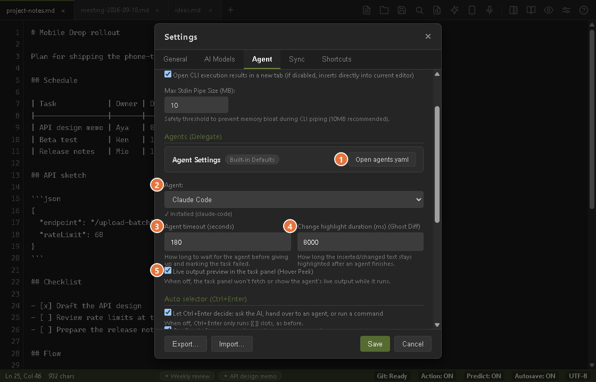
- Open agents.yaml Opens the file that defines agents and notations
- Agent The default agent, with a badge that shows whether its command is installed
- Agent timeout Seconds before a run is cut off
- Change highlight duration (Ghost Diff) In milliseconds
- Live output preview (Hover Peek) Shows the agent's latest output in the task panel
Commands (Run): settings for the command bar.
- CLI Model Name: the model that writes commands in the Command Bar's AI mode (Ctrl+E, then Tab). Leave it blank to inherit the AI Models tab.
- Where the command's output goes: The default is "Below the selected text (the selection stays)": the output goes below the selection's last line, unless it is the same text the command ran on (then nothing is added). "Over the selected text (like a filter)" replaces the selection with the output, as before.
- Open CLI execution results in a new tab: When on (the default), the output is put into the note as set above and the result also opens in a new tab (with no selection, only the new tab opens). When off, no new tab opens, and with no selection the output is added at the end of the note (with "Over the selected text", the whole note is replaced by the output).
- Max Stdin Pipe Size (MB): Changing this has no effect. The limit for
cat log | md-memois fixed at 10 MB, to keep a huge file from spiking memory.
Agents (Delegate): settings for the agents your slots call.
- Open agents.yaml: opens the file that defines notations, agents (with their aliases), recipes and your own snippets. A commented template is generated if none exists yet; it explains
@name,aliasesandsnippets. - Agent: the default agent used when a notation does not name one. The Auto selector also uses it when a line looks like a job for an agent. The list is built from the
agents.yamlcurrently loaded. Below it, a warning appears when the selected agent skips its permission prompts, and a box Agent definitions to review lists agents in your agents.yaml that still copy a replaced built-in definition or would run your instruction as a shell command, with Copy the new definition and Hide until this list changes (see Delegate). - Agent timeout (seconds): how long a run may take before it is cut off (default 180 s, range 10–600 s). If an
agents.yamlalready exists (even one created by "Open agents.yaml"), the file's value wins and this field is not used. - Ghost Diff highlight time: how long the amber line shows on the left edge of the editor right after a result lands (default 4000 ms, range 1000–10000). You can undo with Esc during that time and for 1 second after it. The settings screen labels it "Change highlight duration (ms) (Ghost Diff)".
- Hover Peek: shows the agent's latest output line in the task panel.
Auto selector (Ctrl+Enter): settings for the Auto selector. This group sits between "Agents (Delegate)" and "Suggestions (Quick Actions)".
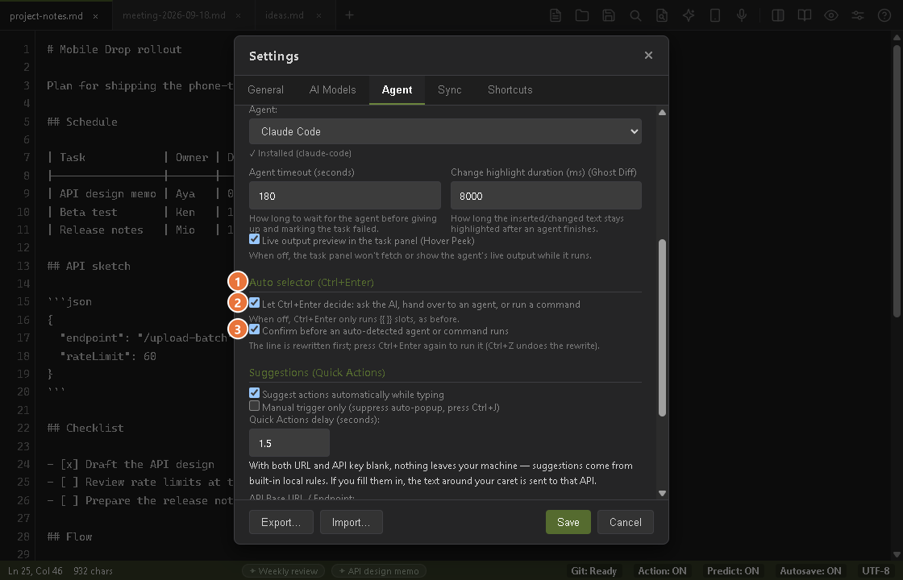
- Auto selector group Between Agents (Delegate) and Suggestions (Quick Actions)
- Let Ctrl+Enter decide On by default. When off, Ctrl+Enter only runs
{{ }}slots, as before - Confirm before an auto-detected agent or command runs On by default. The line is rewritten first, and a second Ctrl+Enter runs it
- Let Ctrl+Enter decide: ask the AI, hand over to an agent, or run a command: on by default (config key
autoSelector.enabled). When off, Ctrl+Enter only runs{{ }}slots, as before. A task you wrote yourself ([[ @llm ... ]],[[ $ ... ]],{{ @agent ... }}) still runs with Ctrl+Enter; only the guessing stops. - Confirm before an auto-detected agent or command runs: on by default (
autoSelector.agentConfirm). The line is rewritten first; press Ctrl+Enter again to run it (Ctrl+Z undoes the rewrite). When off, an agent or a command runs right after the rewrite (an agent that acts without asking is still confirmed first, before the line is rewritten). An AI instruction always runs at once. - Both settings travel with the "Agent & Quick Actions" section of a settings package. A config that has no such group gets the defaults (both on).
Suggestions (Quick Actions): settings for Quick Actions (Ctrl+J).
- Suggest actions automatically while typing: whether cards appear on their own after a pause.
- Manual trigger only (suppress auto-popup, press Ctrl+J): turn off automatic suggestions and show cards only when you press Ctrl+J.
- Quick Actions delay (seconds): how long a pause has to be before cards appear.
- API Base URL / Model Name / API Key: where Jev (or another model) is reached for the candidates. Leave the API Key empty and the Base URL at its default (
https://openrouter.ai/api/v1, modeljev-latest) to use the built-in local rules; nothing is sent until you enter a key or change the URL. With an OpenRouter key, keep the defaults; with a TypeSafe key, set the Base URL tohttps://api.typesafe.ai. Details are under "data that is sent" in Quick Actions.
OS Integration (Send To) (Windows only): the last group on the tab.
- Send To menu (image → OCR): A badge shows "Installed" or "Not installed". Add puts MD-Memo (OCR) in Explorer's Send To menu, and Remove takes it out again. Right-click an image → Send to → MD-Memo (OCR), and its text is appended to today's scrap with no window opening. The steps and the matching
md-memo ocrcommand are under Send To menu and the ocr command.
4. Sync Tab (Git & Scraps)
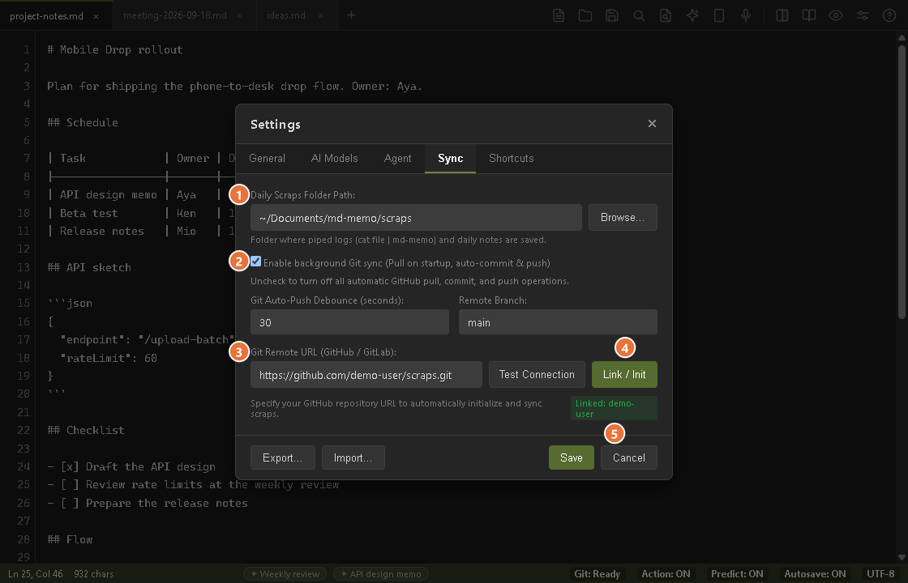
- Daily scraps folder The folder where scraps are saved
- Background Git sync Switch it on or off
- Git remote URL The URL of the scraps repository
- Link / Init Connects the folder to the remote
- Repository status badge Shows the current Git state
- Daily Scraps Folder: Path where
cat file | md-memoand daily notes reside. Use Browse... to pick it. Can point directly to an Obsidian vault or a Dropbox folder. - Enable background Git sync: Runs
git pull --rebaseon launch, then runsgit add/commit/pushin the background once you stop editing. It works when the scraps folder is a Git repository. A remote is not required, but without one the push fails. - Git Auto-Push Debounce (seconds): How long to wait after the last edit before pushing (default 30, range 5–3600).
- Remote Branch: The branch to sync with (default
main). - Git Remote URL, Test Connection, and Link / Init: Enter the URL of an empty GitHub repository (
https://github.com/user/scraps.git), click Test Connection to check access, then click Link / Init. It runsgit initif needed, setsorigin, makes an initial commit, and pushes withpush -u. - Mobile capture via Discord: further down the same tab. Bot token, Discord user id, check interval, and Test Connection. See Discord Bridge for the full walkthrough.
- Hot Folder (auto OCR & transcription): the last section of this tab. Tick "Watch a folder: images are OCR'd, audio is transcribed, both appended to today's scrap" (off by default; config key
inbox.enabled) and set "Watched Folder Path:" with Browse... (default~/Documents/md-memo/inbox;inbox.dir). Processed files are moved into theassetsfolder next to your scraps and never deleted. See Hot Folder. - Keep images on this PC: read them with the on-device OCR only (less accurate): in the same section, off by default (config key
vision.ocrMode: empty, or"on-device"). When on, images are never sent to the vision model. It applies to the hot folder, Screen Capture, the Send To entry and theocrcommand, but not to pasting with Ctrl + V. Windows only: the checkbox is hidden on macOS, which has no on-device OCR engine.
Git sync runs git add ., commit and push in the scraps folder. An .env or .md-memo/agents.yaml kept there is committed too, so do not keep secrets in that folder.
5. Shortcut Cheatsheet
| Action | Windows | macOS |
|---|---|---|
| Global Summon (bring to front; it does not hide the window) | Ctrl + Alt + M | Option + Cmd + M |
| High-Speed Scrap Search | Ctrl + Shift + F | Cmd + Shift + F |
| Command Palette | Ctrl + Shift + P | Cmd + Shift + P |
| Ask AI | Ctrl + L | Cmd + L |
| AI Proofreading & Correction | Alt + C | Cmd + Shift + C |
| Suggest Quick Actions | Ctrl + J | Cmd + J |
| Command Bar (opens in the mode you used last) | Ctrl + E | Cmd + E |
| Mobile Drop (send from your phone via QR) | Ctrl + Shift + U | Cmd + Shift + U |
| Auto selector / run a slot (fixed key) | Ctrl + Enter | Cmd + Enter |
| Toggle Task Panel | Alt + T | Option + T |
| Split Editor Right | Ctrl + \ | Cmd + \ |
| Preview to the Side | Ctrl + Alt + V | Cmd + Option + V |
| Paste as it is (plain text; images saved as files) | Ctrl + Shift + V | Cmd + Shift + V |
| Voice Input | Ctrl + Shift + R | Cmd + Shift + R |
| Quick Capture (global, opens the note popup) | Ctrl + Shift + Q | Not available (Windows only) |
| Open Link | Ctrl + Click | Cmd + Click |
| Reveal Link (Explorer / Finder) | Alt + Click | Option + Click |
| Zen Mode | Shift + F11 | Ctrl + Cmd + Z |
| Full Screen | F11 | Ctrl + Cmd + F |
| Accept Ghost Text (Word) | Ctrl + → | Option + → |
| Insert Date / Time | F5 | Cmd + Shift + I |
| Toggle Comment (hide the lines in <!-- -->) | Ctrl + / | Cmd + / |
The keys "Command Bar: CLI mode" and "Command Bar: AI mode" have no default key, and you can assign them here. Ctrl + K is not used by default either, so it is free to assign.
The "Quick Capture" row exists on Windows only. It is a global key: it works from any program, not just inside MD-Memo. Clear the key and it is turned off. If another program already uses the combination, the change is refused with a message and the previous key stays. See Quick Capture.
Reassigning a shortcut (Settings → Shortcuts)
- AssignClick the key button for a row, then press the combination you want. While it records, the hint reads "Press keys to set · Backspace to clear · Esc to cancel"
- If it is already usedA confirmation appears: "Already assigned to "<action>". Overwrite?" Choose "OK" (Enter) to move it (the other action becomes "Not Set"). "Cancel" or Esc changes nothing
- To leave it unassignedWhile recording, press Backspace (or Delete) and the action becomes "Not Set" and does nothing. Esc cancels the recording. "Reset to Defaults" restores every default key
When checking for duplicates, Ctrl and Cmd are treated as the same key.
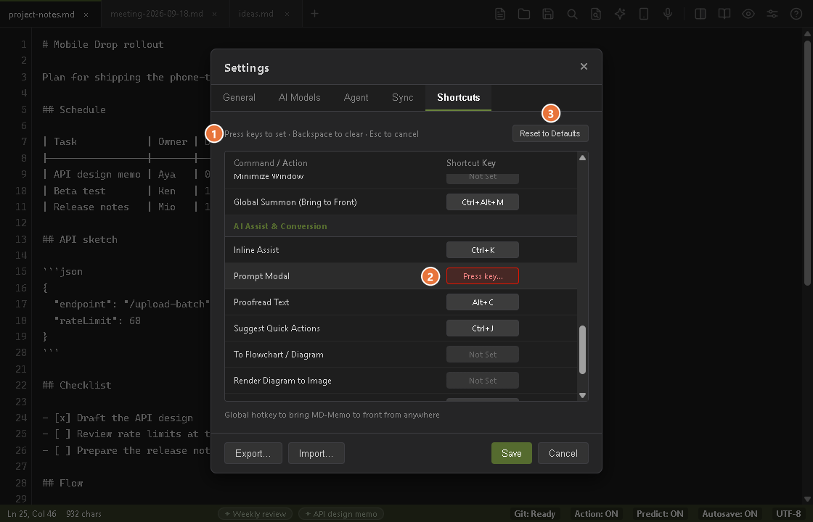
- Hint line Press the new keys. Backspace clears and Esc cancels
- Row being recorded The button shows "Press key..." until you press a key combination
- Reset to Defaults Puts every key back to its default
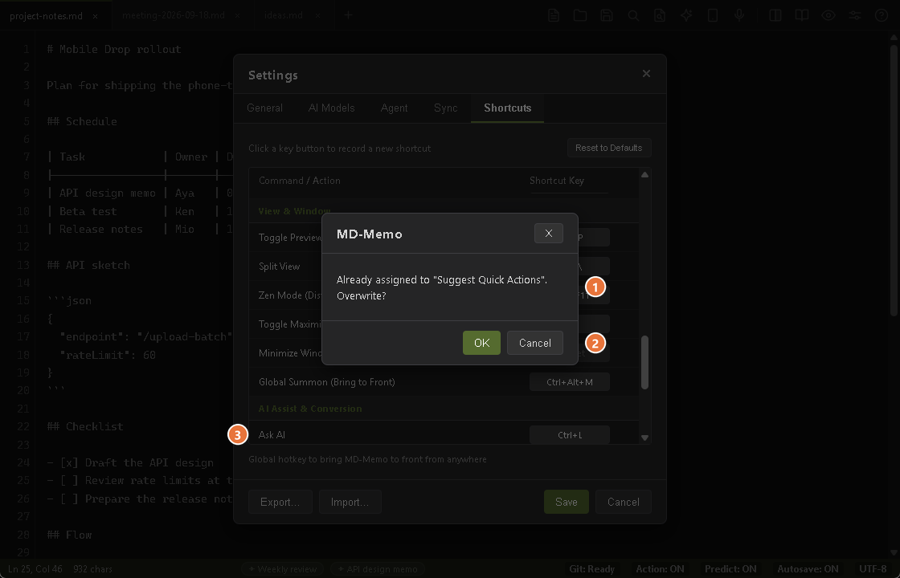
- Confirmation message It names the action that already uses the key, here "Suggest Quick Actions", and asks whether to overwrite it
- OK / Cancel "OK" (Enter) overwrites, and "Cancel" (Esc) keeps the current assignment
- The action being reassigned Here, Ask AI. This row's button was in the recording state
Reserved keys that cannot be assigned
The app uses the combinations below itself. If you try to assign one, you get the message "<combo>" is reserved by the app and can't be assigned.
| Platform | Keys that cannot be assigned |
|---|---|
| Windows / Linux | Ctrl + Tab Ctrl + , Ctrl + Shift + V (paste as it is) Ctrl + Alt + V (preview to the side) Alt + T (task panel) Ctrl + → (accept a ghost-text word) Ctrl + Enter (also with Shift or Alt added; the Auto selector and slots) Ctrl + C Ctrl + V Ctrl + X Ctrl + A Ctrl + Z Ctrl + Shift + Z (redo) Ctrl + Y |
| macOS | Ctrl + Tab Cmd + , Cmd + Q Cmd + H Cmd + Option + H Cmd + M Cmd + Z Cmd + Shift + Z Cmd + X Cmd + C Cmd + V Cmd + A Cmd + Tab Cmd + Space Cmd + Shift + V Cmd + Option + V Option + T Cmd + → Cmd + Enter (also with Shift or Option added) |
Other fixed keys that are not in the settings list
- Ctrl + Enter: The Auto selector's key (see Auto Selector). It runs the task or slot under the caret, or does what the current line asks for. Variants with Shift or Alt added are treated the same way. That is why the default for "Insert Line Below" is Shift + Enter (Shift + Alt + Enter for "Insert Line Above").
- Ctrl + Click / Alt + Click: Open a link (a file, a folder, or a web address in the browser) / show the link's location (files only).
- Inside the Quick Capture popup (Windows): Enter sends, Ctrl + Enter is AI Send, Ctrl + Shift + Enter starts a screen capture and Esc closes it. See Quick Capture.
- Esc: Discards a voice recording.
- Paste as it is (Ctrl + Shift + V) is fixed and cannot be changed. The voice input key can be changed.
On macOS, use the corresponding keys from the table above.
6. Export and Import Settings (Packages)
.mdmemopack file and carry it to another PC. Use Export... and Import... at the bottom of the Settings dialog. API keys are left out at firstExport (Settings → Export...)
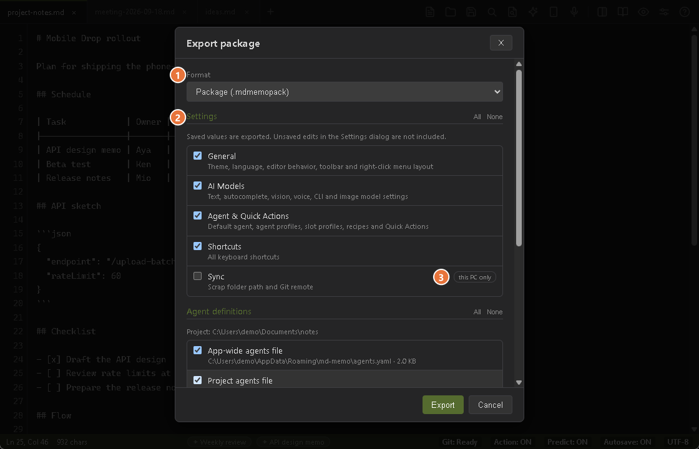
- Format A package (.mdmemopack), or a plain JSON file with the settings only
- Settings Tick one box per section; All and None (top right) switch them all at once
- Sync Marked "this PC only" and unticked at first, because the scrap folder path and similar values differ from PC to PC
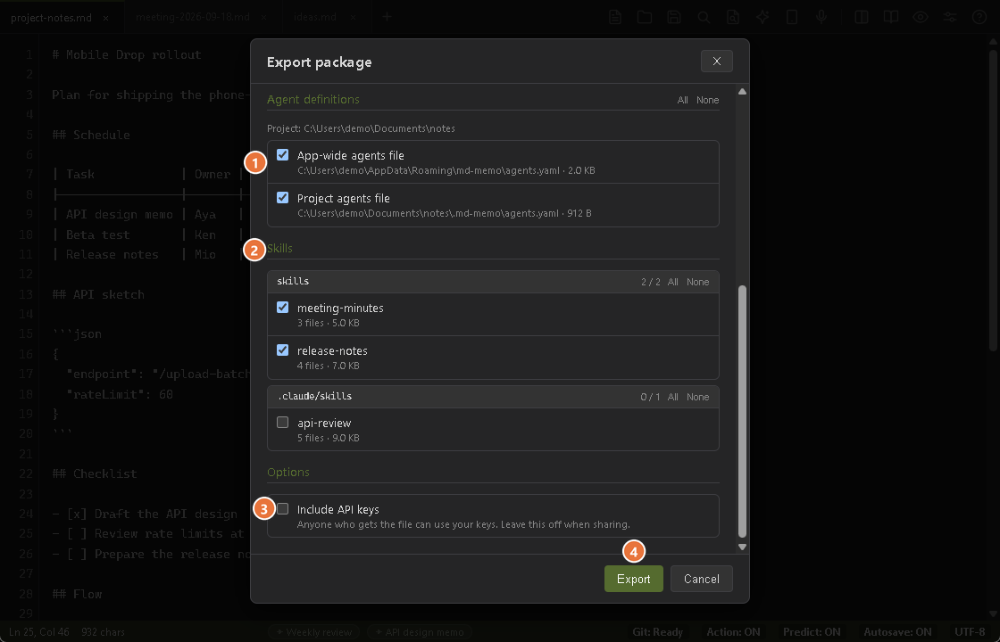
- Agent definitions The app-wide and the project agents file, with their paths; ticked at first
- Skills Only the skills of the current project, grouped by folder; none are ticked at first
- Include API keys Off at first; if you turn it on, anyone who gets the file can use your keys
- Export Asks where to save the package
- Click "Export..."At the bottom left of the Settings dialog; "Export package" opens
- Choose what goes inTick settings sections, agent definitions and skills; Sync and the skills start unticked
- Leave "Include API keys" offSo the file you hand over carries no keys; turn it on only to move to your own other PC
- Click "Export"Pick where to save;
md-memo-YYYYMMDD.mdmemopackis written and a summary is shown
Import (Settings → Import...)
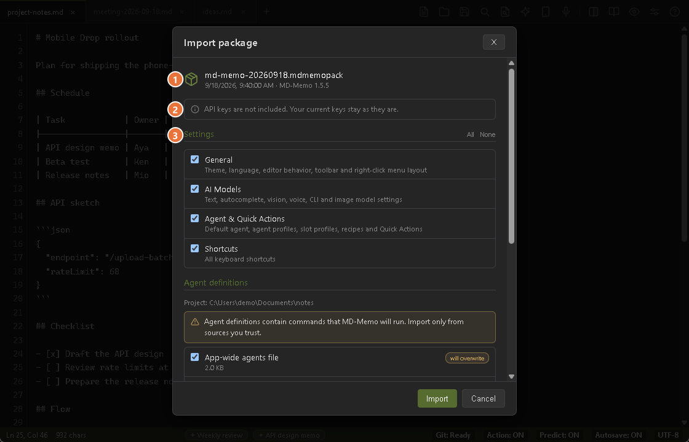
- The package File name, creation date and the MD-Memo version that wrote it
- API key notice "API keys are not included" means your current keys stay as they are; a package with keys shows a warning instead
- Settings Only the sections the package holds; tick what you want to apply
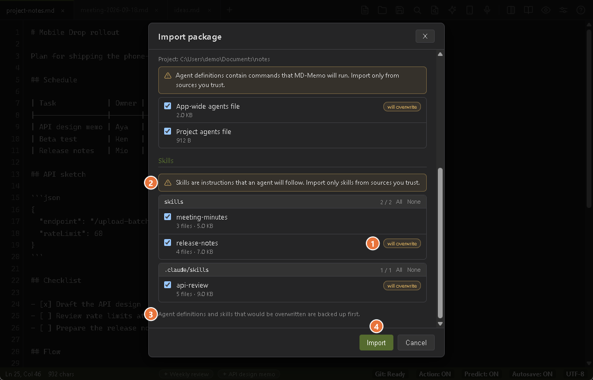
- Will overwrite Something with the same name already exists and will be replaced (it is backed up first)
- Skills warning Skills are instructions an agent will follow; import only skills from sources you trust
- Backup note Agent definitions and skills that would be overwritten are backed up first
- Import Applies only what is ticked
- Click "Import..." and pick the fileA
.mdmemopack; an older settings JSON file works too - Check the contentsItems marked "will overwrite" replace what you have; if the package's API key fields are empty, your current keys are kept
- Tick what to importUntick agent definitions and skills from anyone you do not trust
- Click "Import"Settings apply at once (some need a restart); agent definitions and skills are used from the next agent run
- Settings: General, AI Models, Agent & Quick Actions, Shortcuts, Sync, Other (chosen per section; the Auto selector settings are part of Agent & Quick Actions)
- Agent definitions: the app-wide and the project
agents.yaml - Skills: those in the current project's
skills,.claude/skills,.gemini/skillsand.codex/skills
- API keys: only when you tick "Include API keys"
.envfiles: the project's.envis never packaged- Global skills: skills in your home folder cannot be chosen
- Your notes: a package holds only settings, agent definitions and skills
- Agent confirmations: your Run answers for agents that act without asking stay on this PC; the other PC asks again
Limits and details (secrets, backups, size limits, what "project" means)
API keys and other secrets
- With "Include API keys" off, the value of every setting whose name contains
apikey,api_key,api-key,token,secret,passwordorpasswdis emptied. A Git remote URL loses itsuser:password@part. - In agent definitions, values of the same kind under
env:are emptied (comments and layout are kept). If that cannot be done safely, the file is included unchanged and a notice says it may still contain secrets; check before you share it. - The number of emptied values is shown on the export result screen.
After you import
- Settings are merged into the running app and saved on the spot; theme, language, toolbar and shortcuts switch at once. Sections you did not tick stay as they are.
- Agent definitions and skills are written by MD-Memo itself. A package cannot be imported by editing
config.jsonby hand, because the running app owns that file. - Targets: the app-wide agent definitions go to
%APPDATA%\md-memo\agents.yaml(macOS:~/Library/Application Support/md-memo/agents.yaml), the project's to<project>/.md-memo/agents.yaml, skills to<project>/<folder>/<name>. An agents file that does not parse is skipped with a reason. - Whatever would be overwritten is first copied to
%APPDATA%\md-memo\pack_backups\<date-time>\(macOS:~/Library/Application Support/md-memo/pack_backups/). That folder is outside the project, so skill folders stay clean. The result screen shows the location. - An older settings JSON (one file with all settings) can be imported too; it covers settings only and may contain API keys. Choosing "JSON (settings only)" as the export format writes the same kind of file.
- Some settings take effect after you restart MD-Memo; the result screen says so.
What "project" means
Starting from the folder of the open note (for an unsaved note: the opened folder, else the scraps folder), MD-Memo walks up to the first folder that contains .md-memo, agents.yaml, AGENTS.md, skills or .git. The home folder is never treated as a project (so global skills are never carried away). If no project is found, project items show "needs a project" and cannot be ticked.
Limits and safety
- A package can be up to 50 MB and 3000 files; one file up to 10 MB, 100 MB in total after unpacking. Settings are limited to 2 MB and one agents file to 1 MB. A skill over the limits is left out of the export with a notice.
- Not packaged from skill folders:
.envand.env.*files (templates such as.env.exampleare included),.git,node_modulesand__pycache__folders, and symbolic links. - Refused on import: unsafe paths (
.., absolute paths, drive letters and the like), encrypted or damaged files, and packages from a newer version. Files not listed in the manifest are ignored. - Skills are instructions an agent will follow, and agent definitions contain commands MD-Memo will run. Import only from sources you trust.
04 Power User & Hackers Manual
UNIX Terminal Pipe
| md-memo and it is appended to the end of today's scrap. No setup needed
It reaches the running instance in milliseconds and is appended to the end of today's scrap (scraps/YYYY-MM-DD.md) with a timestamp and the command name. The window comes to the front automatically.
# Pipe a command's output straight into your notes
cat build.log | md-memo
# Record a curl result directly in your notes
curl -s https://api.github.com/zen | md-memoThe pipe input limit is fixed at 10 MB.
JSON-RPC 2.0 API Specification
127.0.0.1 and send newline-delimited JSON-RPC 2.0 requests to control MD-Memo.- Read the connection detailsStartup writes
ipc-session.json(Windows:%AppData%\md-memo\, macOS:~/Library/Application Support/md-memo/). It holds{pid, port, token, started_at} - Open the socketPort 49152 is preferred, but if it is busy a random free port is used instead. Always read the port from this file
- Send requestsSend newline-delimited JSON-RPC 2.0 requests
- Send the tokenPut the
tokenfrom that file in an"auth"field of every request. It is required for every method exceptbuffer.get,buffer.get_selectionandtab.list; without it (or with a wrong one) the call is refused with error-32000and nothing runs. The token changes every time MD-Memo starts, so read the file again after a restart
Breaking change for RPC clients that never sent the token. Earlier versions (up to 1.9.0) ran every method when the auth field was left out. Now buffer.set, buffer.append, buffer.replace, buffer.replace_selection, buffer.save, tab.switch, tab.new, tab.close, ui.activate, ui.toggle_split and ui.eval (and any other method) need it. md-memo buffer|tab|ui already send it; an editor plugin or script that wrote to the port itself has to be updated. The one-line messages behind cmd | md-memo and md-memo <file> are a separate channel and are still not authenticated.
| Method | Params | Description |
|---|---|---|
buffer.get |
{"tab_id": "..."} |
Retrieve the content, hash (first 16 hex characters of the SHA-256), generation index, and line count. Omit tab_id for the active tab; an id that names no tab is error -32002 (no such tab), not an empty buffer. buffer.set, buffer.append, buffer.replace, buffer.save and tab.close take tab_id too. No token needed. |
buffer.set |
{"content": "...", "tab_id": "...", "expected_hash": "...", "expected_generation": 12} |
Replace the whole buffer. Supports optimistic locking (a conflict error if expected_hash or expected_generation does not match the current value; the check and the write happen in one step) and, on a tab that is on screen, preserves the undo history. Pass tab_id to write that tab without switching to it (a tab that is not on screen has no undo history); without it the active tab of the primary pane is written. The answer has tab_id, hash, previous_hash (the hash just before the write) and generation. Token required. |
buffer.append |
{"content": "\n- [ ] New Task", "tab_id": "..."} |
Append text to the end of the buffer. Pass tab_id to append to that tab without switching to it; without it the active tab of the primary pane is used. Token required. |
buffer.replace |
{"start_line": 1, "start_col": 1, "end_line": 2, "end_col": 1, "content": "...", "tab_id": "...", "expected_hash": "..."} |
Replace only the given line and column range. Add expected_hash (or expected_generation) to detect conflicts. Pass tab_id to change that tab without switching to it; without it the active tab of the primary pane is used. Token required. |
buffer.get_selection |
{"tab_id": "..."} |
Get the selected text and its start and end positions (UTF-16 offsets). If nothing is selected, it returns error -32003 (no active selection). A tab that is not on screen has no selection, so naming another existing tab first brings it forward. No token needed. |
buffer.replace_selection |
{"content": "...", "tab_id": "..."} |
Replace the selection (as a single undo step). The selection is read again to check it, so if it changed after you read it you get conflict error -32001, and if nothing is selected you get -32003. Token required. |
tab.list |
{} |
List all open tabs and which one is active. No token needed. |
tab.switch |
{"tab_id": "tab_123"} |
Switch focus to the given tab. An unknown id is error -32002 and nothing changes. Token required. |
buffer.save |
{"tab_id": "...", "path": "C:\\notes\\a.md", "encoding": "utf-8", "overwrite": false} |
Write a note to a file and bind the tab to it (autosave then keeps writing there). It never opens a dialog, never creates a folder and never replaces an existing file unless overwrite is true (the tab's own file needs no flag). path must be absolute, must end in .md, .markdown or .txt, and may not be a network (UNC) or device path, a Windows device name (NUL, CON...) or contain : after the drive letter; without path the tab's own file is written. encoding is utf-8 (default) or sjis; a character Shift_JIS cannot hold is an error that lists where, and nothing is written. Answer: {tab_id, path, bytes, hash, encoding, created}. A refusal is -32602 with a message that starts not saved: and names the rule; a note edited while it was being saved is -32001 (the file holds the earlier text and the tab is not bound). Token required. |
tab.new |
{"title": "...", "path": "C:\\notes\\a.md", "content": "...", "background": true} |
Open a tab and return {id, title, path, existing}. With path (absolute, an existing file) the file is read; a file that is already open is not opened twice (existing is true). path and content cannot be given together. background: true adds the tab without selecting it. Token required. |
tab.close |
{"tab_id": "tab_123", "if_saved": true} |
Close a tab; returns {closed, reason?} and never waits for a dialog. A tab without unsaved changes closes. One with unsaved changes shows the normal save prompt in the window and returns closed: false, reason: "prompt". With if_saved the tab closes only if it has a file whose current content equals its text (line endings ignored), otherwise reason: "unsaved". An unknown id is -32002. Token required. |
ui.toggle_split |
{} |
Toggle 2-pane split mode. |
ui.activate |
{} |
Bring window to the foreground. |
ui.eval |
{"expression": "document.title"} |
Run an arbitrary JavaScript expression inside the app's WebView and return the result. |
The token protects the methods that change something, but it is not a sandbox: the server listens on 127.0.0.1 only, any program of yours that can read ipc-session.json can call every method, including ui.eval, which runs JavaScript inside the app, and buffer.get, buffer.get_selection and tab.list (which read your notes) work without a token. The one-line messages behind cmd | md-memo and md-memo <file> carry no token at all. Treat the port as open to every local program for reading.
Headless CLI Commands
buffer:get(alsoget --out <file>),set,append,replace,replace-selection,savetab:list,switch <id>,new,close <id>ui:activate,toggle-split,eval <expr>
jev(such asverify)agent(prune,install-skill)ocr(md-memo ocr <image>)info: where MD-Memo keeps thingsscrap:path,list,searchconfig get: your settings, with every key and token hidden
- When output is redirected or piped, it is JSON unless you pass
--text. To save plain text, usemd-memo buffer get --text > note.md. md-memo --help(or-h) prints every command and its flags, and also how to pipe text in and how to call the JSON-RPC port directly (session file, message format, methods, error codes).md-memo help bufferprints one command's, andmd-memo --versionprints the version. They write to standard output, exit with code 0 and never start or raise the window, so a script or an AI agent can run them first.- Windows scripts, agents and CI: use
md-memo-cli.exe.md-memo.exeis a windowed program, so PowerShell and cmd do not wait for it and can lose its exit code and output. From the release that containsmd-memo-cli.exe, the zip holds it next tomd-memo.exe: a console program that runs the same commands (writemd-memo-cliwhere this page saysmd-memo), so the shell waits for it and gets the real exit code (jev verify: 0 safe, 1 blocked, 2 warning) and the output. It never starts the app: with no arguments, a file name or piped text it hands the request to the running MD-Memo, or exits with 1 andmd-memo is not running.md-memo.exeis still the one that starts MD-Memo. macOS needs no second program: themd-memocommand there already waits. --jsonworks on everybuffersubcommand.md-memo buffer get --out note.mdwrites the note to a file as UTF-8 (no byte order mark unless you add--bom) and prints only its path, size and hash. Use it instead of>or| Set-Contentwhen the text is Japanese: Windows PowerShell 5.1 re-encodes piped text with the console code page and garbles it. The file is written by the command itself, replaced in one step, and its folder must already exist.info,scrapandconfigaccept their flags before or after their words (md-memo scrap search deploy --limit 5). They only read: nothing is created or changed, and they work whether or not MD-Memo is running.--tab <id>(an id fromtab list) works withbuffer get,set,append,replaceandsave: the write goes to that tab without switching to it, without moving your cursor or focus. An unknown id is an error (no such tab).buffer get --selectionandbuffer replace-selectionwork on the tab shown in the focused pane. Before this changeset,appendandreplaceignored--tab.- The JSON-RPC port now needs the session token for every write.
md-memo buffer|tab|uisend it for you; a script or plugin that talks to the port itself must send thetokenfromipc-session.jsonasauth(see the JSON-RPC section above; this breaks clients that never did).
# 1. Print the current buffer (plain text in a terminal; JSON if redirected)
md-memo buffer get
# 2. Print it as JSON with metadata (hash, generation, length, line count, ...)
md-memo buffer get --json
# 3. Replace the buffer with text from the terminal stream
echo "# Updated note" | md-memo buffer set
# 4. Replace it only if it has not changed since you read it (optimistic lock)
echo "Safe update" | md-memo buffer set --expected-hash a1b2c3d4e5f60718
# 5. Append to the end of the buffer
echo "- [ ] New task" | md-memo buffer append
# 6. Replace one range (line:column, both 1-based)
echo "replacement" | md-memo buffer replace --start 2:1 --end 2:10
# 7. Print only the current selection; exits 1 with "no active selection" on stderr if none
md-memo buffer get --selection
md-memo buffer get --selection --json
# -> {"text": "...", "start": 12, "end": 48}
md-memo buffer get --selection --tab tab_2
# 8. Replace the selection with piped text, as one undo step
# (refuses with a conflict error if the selection changed since it was read)
cat formatted.txt | md-memo buffer replace-selection
# 9. Check a shell command against the AST guardrail (exit code 0 = safe)
md-memo jev verify "git status && npm test"
# [SAFE] Command passed AST validation: git status && npm test
# 10. A blocked command exits with code 1; --json prints the verdict as JSON
md-memo jev verify --json "rm -rf /"
# {
# "isSafe": false,
# "reason": "破壊的コマンド \"rm\" は安全基準により実行を拒否されました (Destructive command blocked)",
# "command": "rm -rf /",
# "rule": "destructive",
# "subject": "rm",
# "level": "block"
# }
# 11. Choose how strictly the guard judges: strict (default, for one-click paths
# nobody reviews), reviewed (a person confirms before running), or unattended (hooks)
md-memo jev verify --mode strict "sudo rm -rf /"
# -> blocked (exit code 1), in every mode
md-memo jev verify --mode reviewed "git status"
# -> safe (exit code 0)
# 12. Prune a Markdown file down to what is relevant to a query
md-memo agent prune --query "login bug" --file notes.md
# 13. Read the text in an image and add it to today's scrap (no running MD-Memo needed)
md-memo ocr photo.png
# OCR text appended to C:\Users\you\Documents\md-memo\scraps\2026-09-24.md
md-memo ocr --json photo.png
# -> {"appended": true, "path": "...", "text": "..."}
# 14. Write the note to a file as UTF-8 (safe for Japanese text); prints only where it went
md-memo buffer get --out note.md
# -> Wrote 1234 bytes to C:\work\note.md (hash 3f2a9c1d5b7e0a44)
md-memo buffer get --selection --out selection.md --json
# -> {"path": "...", "bytes": 84, "hash": "..."}
# 15. Where does MD-Memo keep things? (folders, today's scrap file, whether the app is running)
md-memo info
md-memo info --json
# -> {"version": "1.9.0", "config_dir": "...", "scrap_dir": "...", "today_scrap_path": "...",
# "today_scrap_exists": true, "inbox_dir": "...", "inbox_enabled": false, "autosave": true,
# "gui_running": false}
# 16. Find scraps without the app: the path of a day's file, the list, and a search
md-memo scrap path --date 2026-09-24
md-memo scrap list --from 2026-09-01 --to 2026-09-30
md-memo scrap search deploy --from 2026-09-01 --limit 20
# -> each hit: file, date, line, text, and the nearest heading above it (with its line number)
# 17. Look at your settings without exposing any key (safe to hand to an AI agent)
md-memo config get
md-memo config get scraps.scrapDir --text
md-memo config get text.apiKey
# -> "<set>" (or "<unset>" when empty; the key itself is never printed)
# 18. What can I run? Prints and exits; never starts or raises the window
md-memo --help
md-memo help buffer # one command (also: md-memo buffer --help)
md-memo help rpc # the JSON-RPC port: session file, wire format, methods, error codes
md-memo help pipe # piping text in
md-memo --version
# 19. Install the agent skill that is built into the program (no repository or zip needed)
md-memo agent install-skill # Claude Code: ~/.claude/skills/md-memo
md-memo agent install-skill --codex # Codex ($CODEX_HOME/skills; the path is not verified)
md-memo agent install-skill --dir ~/agent-skills # <folder>/md-memo
# -> Installed the md-memo skill: C:\Users\you\.claude\skills\md-memo
# (run it again later: "already up to date", an unedited older copy is updated, an edited folder is left alone)
# 20. Work on a tab that is not on screen, save it to a file, and close it (nothing on screen moves)
md-memo tab list --json # the ids of the open tabs
id=$(md-memo tab new --background --text) # a new scratch tab; prints its id
echo "# Draft" | md-memo buffer set --tab "$id" # write that tab in place
md-memo buffer save --tab "$id" --as ./draft.md # write it to a file (no dialog; refuses to replace an existing file)
md-memo tab close "$id" --if-saved # closes only if the tab equals its file; exit code 1 otherwiseLimits and details (jev verify exit codes and modes)
jev verify [--mode strict|reviewed|unattended] <cmd>runs the same deterministic, always-on AST analysis that the GUI's run gate uses. It runs entirely locally, and nothing leaves your machine.- Exit codes:
0safe,1blocked,2warning (not known to be destructive, but the guard cannot vouch for it). - Modes: The mode does not change the rules, only how seriously a finding is weighed, because who is watching differs.
strict(the default) is for one-click paths where nobody reviews the command before it runs,reviewedassumes a person confirms before running, andunattendedis for hooks. - A command such as
sudo rm -rf /is reported as blocked in every mode. ocr [--json] <image>reads the Image OCR (Vision) settings and the scraps folder fromconfig.jsonand appends the recognized text to today's scrap. In a terminal it prints the note's path, or(no text recognized)when there was no text (nothing is added then). With--json, or when the output is redirected or piped, it prints JSON withtext,appendedand, when something was added,path. Put--jsonbefore the file name. It works on Windows and macOS (cloud OCR only on macOS) and is what the Explorer Send To entry runs. See Send To menu and the ocr command.
Limits and details (buffer save, tab new, tab close)
buffer save [--tab <id>] [--as <file>] [--encoding utf-8|sjis] [--overwrite]writes the note to a file and binds the tab to it, so autosave keeps writing there. It never opens a dialog, never creates a folder and never replaces an existing file unless you pass--overwrite; saving a tab to the file it is already bound to needs no flag. Without--asthe tab's own file is written (a tab that was never saved:tab has no file: give --as <path>).--asis taken from the folder you run the command in.- Only
.md,.markdownand.txtfiles. Refused, with the rule named in the error: a path that is not absolute, a network path (\\host\shareor//host/share), a Windows device name (CON,PRN,AUX,NUL,COM1-COM9,LPT1-LPT9), a:after the drive letter, a folder, and a folder that does not exist. --encoding sjis(alsoshift_jis,shift-jis,cp932) writes Shift_JIS. Unlike the editor's own save, it never swaps a character it cannot represent for?: it stops with an error that gives the code point, line and column of the first few, and writes nothing. No byte order mark is written and line endings stay as they are in the editor (LF).- The file is written to a temporary file and renamed into place, so it is never half written; an existing file keeps its permissions. If you type in the note while it is being saved, the file holds the text from before your edit, the tab is not bound to it, and the command says so (exit code 1): run it again.
tab newprints the new tab's id (JSON when piped:{id, title, path, existing}; use--textfor the bare id).--pathopens a file (a file that is already open comes back asexistinginstead of a second tab);--backgroundadds the tab without selecting it.tab close <id>exits with 0 only when the tab is closed and never waits for a dialog: a tab with unsaved changes shows your save prompt in the window and the command exits with 1 (prompt).--if-savedasks nothing: the tab closes only when it is bound to a file whose content equals the tab's text, otherwise exit code 1 (unsaved).
Limits and details (buffer get --out, info, scrap, config get)
buffer get --out <file>: the path is taken from the folder you run the command in, a folder is refused, missing folders are not created, and an existing file is replaced.--selectionwrites only the selected text and--tabpicks a tab. The JSON haspath,bytes(the size written, byte order mark included),hash(the valuebuffer set --expected-hashexpects; for a selection, the hash of that text) and, for a whole note,generation.infoprintsversion,config_dir,config_file,scrap_dir,today_scrap_path(not created),today_scrap_exists,inbox_dir,inbox_enabled,autosaveandgui_running(a live app is listening on the port in the session file). It never prints a key, a token or a remote URL.scrap path [--date YYYY-MM-DD]prints the bare path even when piped, so$(md-memo scrap path)works.scrap list [--from D] [--to D] [--lines]lists theYYYY-MM-DD.mdfiles of the scraps folder, newest first (JSON: an array ofdate,path,size,modified, andlineswith--lines).scrap search <text> [--from D] [--to D] [--limit N]is a case-insensitive search of every.mdfile under the folder: the daily files newest first, then any other file, stopping after--limithits (default 100). JSON:{query, count, truncated, matches: [{file, date, line, text, heading, heading_line}]};headingis the nearest Markdown heading at or above the line, ignoring#lines inside code fences. With--fromor--toonly files named like a date are searched. A bad date printsError: invalid date ...and exits with 1; an empty result is not an error.config get [key.path]printsconfig.jsonwith every string below a key named likeapiKey,token,secretorpasswordreplaced by<set>or<unset>, anduser:password@removed from URLs.scraps.scrapDirselects one value,visionone section; an unknown name printsError: no such keyand exits with 1. Add--textto print a single value bare.
Let an AI agent configure MD-Memo
Which file, who edits it, and when it takes effect
| File | Where | When it takes effect | Who edits it |
|---|---|---|---|
config.jsonApp settings (keys, models, shortcuts and more) |
Windows: %APPDATA%\md-memo\macOS: ~/Library/Application Support/md-memo/ |
When you restart MD-Memo. It is read at startup, and the whole file is rewritten every time you save in the settings screen | The agent, only while MD-Memo is fully closed |
agents.yamlAgent, alias, notation and snippet definitions |
Per project: <scraps folder>/.md-memo/agents.yamlor the app's settings folder |
On the next slot run. If it has a syntax error, MD-Memo silently falls back to the defaults | The agent, or you (even while MD-Memo is running) |
Project .envFor agent CLI keys |
The project root (see Delegate: agents) | Every time a slot runs. It is the only env file read when an agent runs | The agent |
| Environment variables | The OS user environment variables | For processes started after you set them (see the fold-out below) | The agent (when you ask for it in the request) |
To move a working setup to another PC, do not ask the agent to copy files; use a settings package (Export and Import Settings) instead.
- Quit MD-Memo completely and back up the filesOn Windows, quit from the tray icon (closing with ✕ leaves it in the tray). On macOS, press Cmd+Q. The backup will contain API keys, so keep it inside the settings folder
- Give the agent a request from belowTell it to read
skills/md-memo/SKILL.mdfirst. Install the skill withmd-memo agent install-skill(newer than 1.8.0), or take it from the release zip (v1.7.1 or later) or GitHub, as described below - The agent edits and validatesAsk it to check the JSON and YAML syntax too
- Start MD-MemoStart it as usual, from the Start menu, Finder or the tray
- The agent checks each featureAsk it to report what it could and could not confirm
Request 1: Set up Gemini in one go (image OCR, voice input, Mermaid image rendering)
Please set up MD-Memo for Gemini (image OCR, voice input, and Mermaid image rendering).
First read skills/md-memo/SKILL.md and skills/md-memo/references/setup-guide.md.
Before you edit config.json, ask me to quit MD-Memo (tray → Quit) and make a backup. Then put the Gemini key I give you only in vision.apiKey (voice and image inherit it).
For voice, set voice.model to gemini-3.5-transcribe, apiStyle to auto, and languageCodes to ["ja-JP"] (replace it with your language, or leave it empty to auto-detect). For images, set image.model to gemini-3.1-flash-lite-image.
Also check the environment and prerequisites these features need (network, microphone permission, general.pasteImageOcr and so on), and set up anything that is missing.
If something needs to be installed or an OS privacy setting needs to change, show me the command and get my permission before you run it.
Never print or commit the key.
After the restart, check each feature with a checklist, and report what you could and could not confirm.Request 2: Add or change an agent, and put its API key in the project's .env
Please add <agent name> to MD-Memo's agents.yaml (the global one directly in the settings folder, or .md-memo/agents.yaml in the scraps folder).
First read skills/md-memo/SKILL.md and skills/md-memo/references/setup-guide.md.
Make a backup, and keep every existing agent and notation (slot_profiles / recipes).
Check the flags with <command> --help, and do not add any flag that skips permission prompts.
Put that agent's API key in the .env at the project root (KEY=value format, UTF-8 without a BOM). Do not print the key.
If Git sync is enabled for the scraps folder, add .env to .gitignore first.
Validate the YAML. If you changed notations (slot_profiles / recipes), tell me that MD-Memo must be restarted.Request 3: Check every feature's prerequisites and set the missing environment variables and settings
Please check the prerequisites of each MD-Memo feature, and set any missing environment variables and settings.
First read skills/md-memo/SKILL.md and skills/md-memo/references/setup-guide.md. Then, one feature at a time, check every feature in the table in section (e) of setup-guide.md, "Per-feature prerequisites and verification": whether what it needs (installs, keys, environment variables, settings) is in place.
Set whatever is missing in the right place: config.json after MD-Memo is quit (backup required), agent definitions in agents.yaml, agent CLI keys in the project's .env, and everything else as OS environment variables.
MD-Memo's own LLM keys go only in config.json (environment variables such as GEMINI_API_KEY are not read by MD-Memo).
If something needs to be installed, or an OS privacy or firewall setting needs to change, show me the command and get my permission before you run it.
Never print or commit keys.
At the end, report each feature in a table as "confirmed / not confirmed / not checked".Prerequisites per feature and how to check them (table)
The agent reads this table from section (e) of skills/md-memo/references/setup-guide.md. You can also use it to check by hand.
| Feature | What must exist | Config key / variable | How to check |
|---|---|---|---|
| Text LLM (Ctrl+L, Alt+C, presets) |
Local: Ollama and ollama pull qwen2.5:latest (or "Install Gemma 4" in Settings → AI Models). Cloud: a Gemini or OpenAI-compatible key |
text.baseUrl, text.model, text.apiKey (Ollama needs no key) |
Local: curl http://127.0.0.1:11434/api/tags returns 200 and lists the model. In the app: select a sentence, press Ctrl + L, type "translate to English" and press Enter. The translation appears below the sentence |
| Ghost text | Same as above (a small model is recommended) | autocomplete.* |
Type 2 or more characters and pause for 0.5 seconds: a dim suggestion appears. The status bar says "Predict: ON", and Tab accepts it |
| Ollama auto start and stop | MD-Memo starts Ollama when a request to 127.0.0.1:11434 fails on /api/tags. If you move text and autocomplete off 11434 and save the settings, it stops Ollama (this ends all of that user's Ollama processes) |
None | ollama list (on some installs, running the ollama command alone starts the Ollama app) |
| Image OCR (Ctrl+V image, Mobile Drop photos) |
A Gemini key, or a local vision model (ollama pull qwen2.5-vl:latest, and vision.baseUrl set to http://localhost:11434) |
vision.*, general.pasteImageOcr: true |
Copy only an image and press Ctrl + V. It becomes Markdown |
| Voice input | A Gemini key (voice.apiKey, else vision.apiKey), the model gemini-3.5-transcribe, and microphone permission |
voice.* (no environment variable needed) |
Ctrl + Shift + R shows the marker. Speak, then press it again or stay quiet for a while, and it becomes text |
| Microphone permission | WebView2 asks for permission at the first recording. On Windows, allow desktop apps in Settings → Privacy & security → Microphone. On macOS, allow it in System Settings → Microphone (macOS behavior is not yet verified) | None | If you see "Could not use the microphone", permission was denied or the OS blocks it. Do not delete %LOCALAPPDATA%\md-memo\webview without the user's consent |
| Clipboard permission | The Ctrl + Shift + V fallback (only when Markdown conversion on Ctrl+V is switched off) and Mobile Drop's "Text from PC" read the async clipboard. WebView2 may ask the first time | None | Copy rich HTML and press Ctrl + V. It becomes Markdown and a toast appears |
| Mermaid to image | A Gemini key and a network connection | image.apiKey (else vision.apiKey, text.apiKey), image.model, image.aspectRatio, image.resolution |
Put the caret in a ```mermaid block and choose "Diagram: Generate Image with Gemini" in the command palette. You get an image link (save the note first) |
| Mermaid from text | Text LLM | text.* |
Select text and choose "Diagram: Convert Selection to Mermaid" in the command palette |
| Command Bar (Ctrl+E) | The tools you pipe through must be on PATH (jq, sort, tr, duckdb and so on) |
None | Select some lines and press Ctrl + E (if the badge says "AI CLI", press Tab), type sort -u and press Enter. The command runs in the app's working directory |
| Command Bar AI mode (Ctrl+E, then Tab) | Text LLM (or cli.*) |
cli.model and others |
Type "list files here" and press Enter: a command lands in the bar. Read it, then press Enter to run it |
| Slot agents | Install and log in to every CLI you use (claude, codex, ollama, agy and so on). The GUI app must be able to see PATH |
Keys go in <project root>/.env, or in the CLI's own login |
Settings → Agent shows whether the selected agent is available (a PATH lookup, cached for 30 seconds). Write {{ say hello }} and press Ctrl + Enter: the result lands. The error エージェント起動失敗 (inserted in Japanese in both UI languages) means the command is not on the GUI's PATH |
| Auto selector (Ctrl+Enter) |
For AI tasks: the text LLM (as above). For agent tasks: an installed agent CLI (see Slot agents). Command tasks need only the command itself on PATH | autoSelector.enabled, autoSelector.agentConfirm (both true by default; a config without them gets the defaults) |
Write a line such as "Translate the checklist above into Japanese" and press Ctrl + Enter: the line becomes [[ @llm ... ]] and the answer lands below it, in a block. Settings → Agent shows the two boxes in the "Auto selector (Ctrl+Enter)" group |
| Quick Actions | Not needed for the local rules (an external engine is optional) | action.* |
Press Ctrl + J in a note with text: up to 3 cards appear. An sh card runs in the app's working directory |
| Git sync | git on PATH. An empty remote repository. Credentials that work without prompts (a credential manager or an SSH key; prompts are disabled) |
scraps.scrapDir, scraps.gitSyncEnabled, scraps.gitRemoteUrl, scraps.gitRemoteBranch |
git -C <scrapDir> remote -v, git -C <scrapDir> ls-remote --heads origin. In the app: Settings → Sync, "Test Connection", then "Link / Init". Add .env to .gitignore first |
| Mobile Drop (same LAN) | Phone and PC on the same LAN (no AP isolation or VPN in the way). If asked, allow MD-Memo through the Windows firewall on private networks | None | Ctrl + Shift + U shows a QR code and http://<LAN IP>:<port>/?token=.... Photos need vision.*, and voice needs voice.* |
| Mobile Drop (over the internet) | Install cloudflared yourself (Windows: winget install --id Cloudflare.cloudflared -e, macOS: brew install cloudflared). MD-Memo looks for it when you press the button, so no restart is needed |
None | cloudflared --version. Press the tunnel button in the dialog: an https://...trycloudflare.com/?token=... address appears within 15 seconds. Data passes through Cloudflare, so do it only when the user asks |
| Global summon key | None | shortcuts.globalSummon |
Press it from another app. If it clashes with another app at startup, no error is shown. If you change it in the settings screen and the OS refuses, it reverts and a toast appears |
| Windows prerequisite | Microsoft Edge WebView2 Runtime (MD-Memo cannot start without it) | None | Start the app |
| macOS prerequisite | macOS 10.15 or later. For a build without Apple notarization, the first launch needs System Settings → Privacy & Security → Open Anyway (macOS 15 or later) or right-click → Open (macOS 14 or earlier); xattr -dr com.apple.quarantine "MD-Memo.app" works on any version |
None | By design there is no tray. Use the Dock icon and the hotkey to bring the window back |
About environment variables (what is read and what is not)
- Variables MD-Memo itself reads:
TYPESAFE_API_KEY(elseJEV_API_KEY),OPENROUTER_API_KEY(CLI only),JEV_MODEL,JEV_API_URL, andPATHand similar. - Variables it does not read:
GEMINI_API_KEY,GOOGLE_API_KEY,OPENAI_API_KEY,ANTHROPIC_API_KEY,OLLAMA_HOST. MD-Memo's own LLM features read their keys and URLs only fromconfig.json. These variables help only the external agent CLIs that read them. - GUI apps do not inherit them: An app started from the Start menu or Finder does not inherit shell-profile variables. On macOS, MD-Memo repairs only
PATH. For other variables, use the project's.env. - Saving on Windows: Save a user environment variable with
setx NAME "value", fully quit MD-Memo from the tray, and start it again. - A good split: agent keys in
<project root>/.env, MD-Memo's own keys inconfig.json, and OS environment variables only for additions to PATH and the Jev-related ones.
- Show, log, paste into chat or commit API keys,
config.json(and its backups),.envorsession.json. Keys are masked like "set (...last 4 characters)". - Start a second MD-Memo or force-kill the process. You quit it from the tray.
- Edit
config.jsonwhile MD-Memo is running. Do not delete a key to "reset" it; write an explicit default. - Read settings with
md-memo ui eval, or callwindow.backend.*. - Point the scraps folder at a repository, your home folder or a drive root. Put
.envin the scraps folder without git-ignoring it. - Add a flag that skips permission prompts (such as
--dangerously-skip-permissions) to an agent definition, or register a CLI it has not checked with--help. - Start a Cloudflare tunnel, install
cloudflared, change OS microphone, firewall or privacy settings, or run theollamacommand without your request. - Say "it works" without going through the checks. Anything it could not confirm should be reported as "not confirmed".
The folder to point the agent at is skills/md-memo. When you make a request, tell it to read SKILL.md first.
Easiest: let MD-Memo install the skill. A program newer than 1.8.0 carries the skill inside it. Run md-memo agent install-skill and it copies the folder to ~/.claude/skills/md-memo (Claude Code; CLAUDE_CONFIG_DIR is honored). It needs no repository, no zip and no running MD-Memo, so it is also the way for a Homebrew install. --codex installs for Codex (into $CODEX_HOME/skills, else ~/.codex/skills; that Codex reads skills from there is not verified, so use --dir if it does not), and --dir <folder> installs into any folder you name (the skill lands in <folder>/md-memo). It prints what it installed and where. Run it again after updating MD-Memo: an unchanged skill prints "already up to date", an older copy you have not edited is replaced, and a folder you edited (or that this command did not write) is left alone, with the differing files listed, unless you add --force. Programs up to 1.8.0 do not have the command; use one of the ways below.
Without the command, the skill is in the release zip. From v1.7.1 the zip on the Releases page holds a skills folder next to the program (next to md-memo.exe on Windows, next to MD-Memo.app on macOS), so use the skills/md-memo folder from it. Older zips, and installs made another way (for example Homebrew), do not have it: get the folder from GitHub instead. Either give the agent the address above, or download the whole repository (Code → Download ZIP on the GitHub page, or git clone https://github.com/youshinh/md-memo.git) and use its skills/md-memo folder. An agent that can read web pages opens the four files in references/ that SKILL.md links to by itself. To keep the skill always available, copy the folder (five Markdown files, about 340 KB) into your agent's skills folder, for example ~/.claude/skills/md-memo for Claude Code.
External Editor Recipes
Neovim / Vim Send Command:
" .vimrc / init.vim
command! MDMemoSend :w !md-memoPowerShell Clipboard Append:
Get-Clipboard | md-memo buffer appendDump a tmux pane into your scraps:
tmux capture-pane -p | md-memoGlossary: internal names and what they refer to
Release notes, configuration files, and CLI subcommands still carry the names these features were built under. You never need them for day-to-day use, but here is what they mean when you run into them.
| Term | Which feature | What it means |
|---|---|---|
| Jev | Quick Actions | An external judging model provided by TypeSafe AI — it is not built into MD-Memo. It is used only when you enter an OpenRouter or TypeSafe API key under Settings → Agent → Suggestions (Quick Actions); it does not write text, it ranks MD-Memo's built-in candidates. Otherwise MD-Memo uses its built-in local rules. The name also survives as a CLI subcommand, as in md-memo jev verify, but jev verify (the AST check) runs entirely locally. |
| Slot | Delegate to an agent | The {{ }}-style notation in your note, and the mechanism that calls an agent from it. slot_profiles in the config file is where those notations are defined. |
| Auto selector | Delegate · Auto Selector | What Ctrl + Enter does with a line that is not already a slot. It decides, by fixed rules on your PC, whether the line is for the built-in AI, an agent or a command. It uses no network and no model, and it does not use Jev. It is not the quick selector, the popup that opens when you type {{. |
| Result block | Auto selector | The answer written below a task line, between two HTML comment lines (<!-- md-memo:res id --> and <!-- /md-memo:res -->). While the task runs, a one-line md-memo:run marker stands in for it. |
| Snippet | Auto selector | A ready-made task or command that you insert from the {{ popup, from the command palette ("Insert task snippet") or with a short word and Tab. Your own snippets, under snippets in agents.yaml, join the built-in ones. |
| Alias | Delegate to an agent | An extra name for an agent, set with aliases in agents.yaml. {{ @cc ... }} calls claude-code because cc is one of its default aliases. |
| System 1 | Quick Actions | The name for the fast inference mode that answers without deliberating — borrowed from the intuitive half of human thinking. It is why suggestions do not keep you waiting. |
| 3-Beam | Quick Actions | The approach of offering up to three candidates at once rather than committing to one. Those are the three cards you see. |
| MAP-Elites | Quick Actions | The algorithm that keeps the three cards from resembling each other by picking candidates of different character, such as a Run card next to a Delegate card. Which kinds appear depends on what you are writing and on whether an external model is configured. |
| AST guardrail | Quick Actions / md-memo jev verify |
Parses a shell command as syntax before running it and refuses it on detecting a destructive command, a write into a protected system directory, and similar patterns. It covers known dangerous patterns, not every possible risk. |
| Ghost Diff | Delegate to an agent | The 3 px amber line shown on the left edge of the editor, for the time you set, right after an agent's result is merged into the note. It does not mark only the changed lines. Esc undoes the change while the line is showing and for one second after. |
| Hover Peek | Task panel | The latest output line from a running agent, shown so you can peek at its progress. |
| Inbox | Hot Folder | The internal name of the hot folder. It shows up as inbox.enabled and inbox.dir in the config file, and as "Open inbox folder" in the tray menu and the command palette. |